الحركة الطبيعية الحركة الرمزية الحركة البدائية (الساذج) حركة الفنون و الحرف الحركة النغمية حركة الإنطباعية الجديدة حركة ما بعد الإنطباعية حركة الواقعية الجديدة الحركة التعبيرية حركة الواقعية الإجتماعية الحركة الإنفصالية الحركة الجمالية الحركة التفوقية الحركة الطليعية الحركة الدادائية الحركة البنائية حركة الحد الأدنى الحركة الميتافيزيقية حركة الحداثة حركة الواقعية السحرية حركة المناطق (رايون) حركة الأرت ديكو حركة التزامن حركة الدوامة حركة النقاء حركة الدقة حركة الزنوج (نهضة هارلم) حركة المتأمرون الحركة الأصلانية الحركة الإقليمية حركة الواقعية الإشتراكية الحركة التصويرية الحركة الرومانسية الجديدة الحركة الرسائلية (الحروفية) حركة الشباب البولندي حركة التعبيرية المجردة حركة البقعية (التاشييه) حركة كوبو المستقبلية حركة العمل الفييني حركة فن الأداء حركة الوهم المجرد حركة النسوية حركة فن الالياف حركة فن البريد حركة الفن الخارجي (بروت أرت) الحركة الملموسة (الفن الخرساني) حركة التعبيرية الجديدة (المحدثة) حركة الدادائية الجديد (المحدثة) حركة التصوير الجديد حركة الفن الحركي الحركة المكانية (الفراغية) حركة الكلاسيكية الواقعية
الحركة الطبيعية
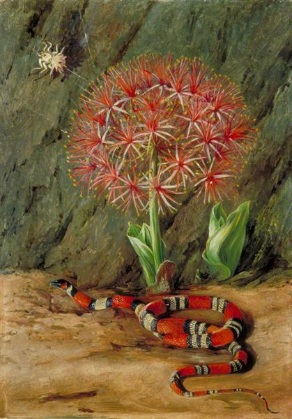الزهرة الإمبراطورية - الأفعى المرجانية و العنكبوت - ماريان نورث
هي «الفكرة أو المعتقد الذي يُشير إلى أن القوانين والقوى
الطبيعية (في مقابل الخارقة للطبيعة أو الروحانية) هي الوحيدة العاملة في العالم»،
يُصِر أتباع الطبيعانية (الطبيعانييون) على أن القوانين الطبيعية هي القواعد التي
تحكم هيكل وسلوك الكون الطبيعي، وأن الكون المتغير في كل مرحلة هو نتاج لهذه القوانين.
«لا تمثل الطبيعانية نظامًا مميزًا كوجهة نظر أو نزعة شائعة لعدد
من الأنظمة الفلسفية والدينية، وليست مجموعة محددة من العقائد الإيجابية والسلبية كسلوك أو روح سائدة
ومؤثرة على العديد من العقائد، كما يوحي الاسم، تشير هذه النزعة أساسًا إلى كون الطبيعة هي المصدر الأساسي
والجوهري لكل ما هو موجود، وإلى محاولة تفسير كل شيء وفقًا لقوانين الطبيعة.
لا تتأثر الأدوات الطبيعية
العاملة إذا كانت حدود الطبيعة هي نفسها حدود الواقع القائم أو السبب الأول لقيامه، وذلك في حال كون
وجوده ضروريًا لهذا السبب، تجد جميع الأحداث تفسيرًا كافيًا لها ضمن الطبيعة نفسها.
لكن وبسبب استخدام
المصطلحين «طبيعة» و«طبيعي» بأكثر من معنى، فإنه من المستبعد أن يمتلك المصطلح «طبيعانية» معنىً واحدًا فقط،
يزعم الفيلسوف (ديفيد بابينو) أنه «يُمكن تقسيم
الطبيعانية بديهيًا إلى مكوّنين: وجودي ومنهجي».
يُشير المكون «الوجودي» إلى الدراسة الفلسفية لطبيعة
الوجود، يُساوي بعض الفلاسفة بين الطبيعانية والمادية، فعلى سبيل المثال، يزعم الفيلسوف الأمريكي بول
كيرتز أنه يُمكن تفسير الطبيعة على أفضل وجه من خلال الإشارة إلى المبادئ المادية.
تتألف هذه المبادئ
من الكتلة والطاقة وغيرها من الخصائص الفيزيائية والكيميائية المقبولة لدى المجتمع العلمي، إضافة
إلى هذا، ينص هذا المدلول من الطبيعانية على كون كل من الأرواح والآلهة والأشباح أمورًا غير حقيقية
وأنه لا توجد غاية لها في الطبيعة.
يُشار إلى الاعتقاد المطلق بالطبيعانية بمصطلح «الطبيعانية الوجودية».
يُشار إلى افتراض الطبيعانية كنموذج حالي في طرائق العمل دون الاعتقاد بأن الطبيعانية هي
حقيقة مطلقة ذات اقتضاءٍ فلسفي بمصطلح «الطبيعانية المنهجية».
الحركة الرمزية

الأمل - جورج فريدريك واتس
الرمزية (بالإنجليزية: Symbolism) حركة في
الأدب والفن ظهرت في فرنسا في أواخر القرن التاسع عشر، كرد
فعل للمدرستين الواقعية والطبعانية، وهدفت إلى التعبير
عن سر الوجود عبر الرمز، وقد تأثر الرمزيون، أكثر ما
تأثروا، بأعمال بودلير، ومع احتفاظهم بمبدأ «الفن للفن»
فقد سعوا في المقام الأول إلى إعطاء القارئ انطباعاً عن
وعيهم الباطن، معتمدين في ذلك على الموسيقى والصُّور الشعرية
التي تبرز «أحلام الشاعر الداخلية»،إطلع وإقرأ نشر جون مورياس
Moreas لبيان الرمزية في صحيفة «الفيغارو» في 18 سبتمبر 1886.
ومع ذلك فإن كثيراً من مؤرخي الأدب يعتبرون مالارميه Mallarme،
وليس مورياس، مؤسس الرمزية، على حين يُعتبر ألبير سامان Samain
وبول فيرلين Verlaine بول فاليري Valery من أبرز
أركانها، وفي أعمال إيليوت Eliot وبروست وجويس Joyce عناصر رمزية قوية،
أما الرمزية الموسيقية
فيمثلها دو بوسي Debussy، في حين يمثل ماترلينك Maeterlinck الرمزية في المسرح
،وفي الرسم يبدو أثر الرمزية
في كثير من أعمال الانطباعيين.
الرمزية استخدام الرمز لتمثيل الأشياء مثل الأفكار والمشاعر، وتستخدم الرمزية أحياناً
لكي تشير تحديداً إلى رموز الوثنية التي تقوم بالتعبير عن ذاتها، بدلاً من الرموز اللغوية، وهي مدرسة فنّيّة
وأدبيّة في الشعر وسائر الفنون، ظهرت في فرنسا وبلجيكا حوالي سنة 1870، وذلك كرد
فعل للمدرستين الواقعية والطبعانية(الحركة الطبيعية)، وهدفت إلى التعبير عن سر الوجود من طريق
الرمز وامتدّت هذه المدرسة إلى روسيا وقد تأثر اتباع هذه المدرسة بشارل بودلير.
وفى مجال التحليل النفسي، يصور كلاً من سيجموند فرويد وكارل يونغ بأن الرموز ليست
من العقل، بل نابعة من قدرة العقل على استيعاب
المعلومات، ويستخدم العقل الرموز لتشكيل حرية تكوين الجمعيات، والتنظيم، والربط بين الرموز.
وقد تباينت آراء يونغ وفرويد حول نظم القضية المعرفية الموحدة للرمز وعما إذا كانت توجد
داخل العقل الفردي أو بين العقول الأخرى، سواء أكانت الرمزية المعرفية فطرية أو حددتها
البيئة، فالرمزية مهمة بالنسبة للدين لأن بعض الايحاءات الدينية والإلهية تم تفسيرها
عن طريق الرموز ولقد وصف ماكس فيبر المذاهب الدينة بأنها نظاماً من الرموز الدينية المقدسة.
الحركة البدائية (الفن الساذج)

بورتريه ذاتي من ليل سانت لويس - هنري روسو
تُعد البدائية أسلوبًا من أساليب المثالية الجمالية،بحيث تحاكي المثالية الجمالية أو تطمح
لإعادة إحياء التجربة "البدائية"، في الفن الغربي، استعارت البدائية
بشكل نمطي من الأشخاص غير الغربيين أو من عاشوا في مرحلة ما قبل
التاريخ حيث يُعتبرون "بدائيين"، مثل ما ضمه بول جوجوين من الزخارف
التاهيتية في اللوحات والسيراميك.
إن المستوحيات التي أُخذت من الفن
الغير الغربي أصبحت مهمة لتطوير الفن الحديث، لكن تم انتقاد البدائية
بسبب استنساخ النماذج النمطية للعناصر و النماذج التي تدور حول الشعوب غير
الأوروبية التي استُخدمت من قبل الأوروبيين بغرض تبرير الغزو الإستعماري على أراضيها.
غالبًا ما ينطبق مصطلح "البدائية" على الرسامين المحترفين الذين يعملون بنمط الفن البسيط،
أو الفلكلوري مثل: هنري روسو، ميخائيل لاريونوف، بول كلين و آخرين.
حركة الفنون و الحرف
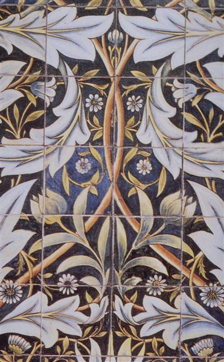البلاط الخزفي - تصميم وليام موريس و تصنيع ويليام دي مورغان
كانت حركة الفنون والحرف عبارة عن حركة دولية في
الفنون الزخرفية والتشكيلية بدأت في بريطانيا وازدهرت في أوروبا وأمريكا
الشمالية بين حوالي 1880 و 1920 ، وظهرت في اليابان في عشرينيات القرن الماضي.
كانت ترمز إلى الحرف اليدوية التقليدية باستخدام أشكال بسيطة ، وغالبًا ما يستخدم
وحدات و أنماط زخرفية من العصور الوسطى أو الرومانسية أو الشعبية، لقد دعت إلى الإصلاح
الاقتصادي والاجتماعي وكانت في الأساس مناهضة للصناعة.
كان لها تأثير قوي على
الفنون في أوروبا حتى تم استبدالها بفنون الحداثة في الثلاثينيات من القرن الماضي ،
واستمر تأثيرها بين الحرفيين والمصممين ومخططي المدن بعد ذلك بوقت طويل،
تم استخدام المصطلح لأول مرة بواسطة TJ Cobden-Sanderson في اجتماع لجمعية معرض الفنون و
الحرف في عام 1887 ، على الرغم من أن المبادئ و
الأساليب التي استندت إليها كانت تتطور في إنجلترا
لمدة عشرين عامًا على الأقل، حيث كانت مستوحاة من
أفكار المهندس المعماري Augustus Pugin.
تطورت الحركة في وقت مبكر وبشكل كامل
في الجزر البريطانية، وانتشرت عبر الإمبراطورية البريطانية
وبقية أوروبا وأمريكا الشمالية، كان إلى حد كبير رد فعل ضد الحالة الفقيرة
المصورة للفنون الزخرفية في ذلك الوقت والظروف التي تم إنتاجها فيها.
وظهرت بعد ذلك حركة الفنون والحرف اليدوية
من محاولة إصلاح التصميم والديكور في منتصف القرن التاسع عشر في بريطانيا، حيث أتت كرد
فعل ضد الانخفاض الملحوظ في المعايير التي ربطها المصلحون بالآلات وإنتاج المصانع،
وقد شحذ نقدهم من خلال العناصر التي رأوها في المعرض الكبير لعام 1851 ،
والتي اعتبروها مزخرفة بشكل مفرط ومصطنعة وتتجاهل صفات المواد المستخدمة.
الحركة النغمية
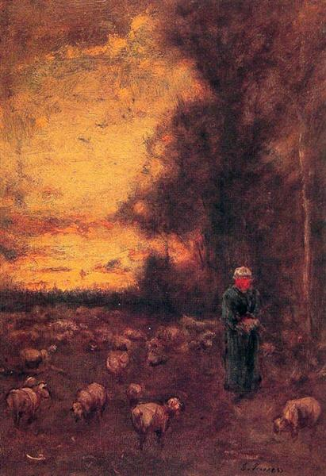نهاية اليوم - جورج إينيس
كان النغمية أسلوبًا
فنيًا ظهر في ثمانينيات القرن التاسع عشر عندما بدأ الفنانون الأمريكيون في رسم أشكال المناظر
الطبيعية بنبرة عامة من الجو الملون أو الضباب، بين عامي 1880 و 1915 ، كانت الألوان الداكنة
والمحايدة مثل الرمادي أو البني أو الأزرق ، غالبًا ما يهيمن عليها فنانون مرتبطون بإسلوب الحركة النغمية ضمن تلك الفترة.
خلال أواخر تسعينيات القرن التاسع عشر ، بدأ نقاد الفن الأمريكيون في استخدام مصطلح "نغمة"
لوصف هذه الأعمال،حيث كانا اثنان من الرسامين البارزين المرتبطين بتلك الفترة، هما جورج إينيس و جيمس ماكنيل ويسلر و
،وظهرت بعد ذلك النغمية الأسترالية كحركة فنية في ملبورن خلال العقد الأول من القرن العشرين.
تستخدم النغمية أحيانًا لوصف
المناظر الطبيعية الأمريكية المشتقة من الفرنسيةباربيزون، الأسلوب الذي أكد على
الحالة المزاجية والظل، في النهاية الحركة النغمية انتهت بعد أن طغى عليها الإتجاة الإنطباعي والحداثة الأوروبية.
الحركة الإنطباعية الجديدة

فترة بعد الظهيرة - جورج سورات
الانطباعية الجديدة هي حركة فرنسية كانت بدايتها التاريخية تعود إلى أواخر القرن التاسع عشر في فرنسا وانتشرت
لاحقًا في جميع أنحاء أوروبا،ويمكن القول أنها كانت رد فعل ضد الواقعية التجريبية من خلال
الاعتماد على الحساب المنهجي والنظرية العلمية لتحقيق تأثيرات بصرية محددة سلفًا.
بحلول منتصف ثمانينيات القرن التاسع عشر ، كان الشعور بأن تركيز الانطباعية
على مسرح الضوء ضيقًا جدًا ، فبدأ جيل جديد من الفنانين ، بما في ذلك جورج سوراتو
بول غوغانو هنري تولوز لوتريك، و فنسنت فان غوغ، الذي سيشار إليهم لاحقًا بشكل عام
باسم ما بعد الانطباعيين، بدأ هؤلاء الفنانين في تطوير أساليب جديدة للخط واللون والشكل، ففي عام
1879 بعد مغادرته مدرسة الفنون الجميلة التي درس فيها لمدة عام ، قال سورات إنه يريد أن يجد
طريقته الجديدة في الرسم.
قدّر بشكل خاص كثافة اللون وأخذ ملاحظات مكثفة حول
استخدام الألوان من قبل الرسام يوجين ديلاكروا، الذي بدأ في دراسة نظرية الألوان
وعلم البصريات وشرع في مسار من شأنه أن يقوده إلى تطوير أسلوب جديد سماه Chromoluminarism .
أصبحت اكتشافات "المزج البصري"
و "التباين المتزامن" التي قرأ عنها سورات الأساس النظري للكرومولومينارية
، والتي أصبحت تُعرف باسم الانطباعية الجديدة. أثناء العمل في مصنع صبغ Gobelins
في باريس ، كان على الكيميائي
الفرنسي Michel-Eugène Chevreul الرد على شكاوى العملاء
حول جودة لون الغزل، أثناء محاولته معالجة المشكلة
، اكتشف مبدأ "التباين المتزامن" ، أو تأثير لون
الخيوط المجاورة على إدراك لون خيوط أخرى. بعد ذلك ، كتب Chevreul مبادئ الانسجام وتباين الألوان(1839). في وقت لاحق ، ناقش الفيزيائي الأمريكي أوغدن رود في كتابه اللوني الحديث (1879) كيف أن عين المشاهد "تمزج" أو "تمزج" الألوان المجاورة ، ووضع خبير التجميل السويسري ديفيد سوتر قواعد للعلاقة بين الرسم والعلم في ظواهر الرؤية (1880) .
لتحقيق أكثر الألوان إشراقًا وتأثيرًا
متلألئًا ، اعتمدت Neo-Impressionism على تطبيق النقاط أو ضربات الفرشاة ذات الألوان التكميلية على اللوحة القماشية،
بدلاً من مزج الأصباغ على لوح الألوان ، اعتمد الرسامون
الانطباعيون الجدد على عين المشاهد "لمزج" الألوان التي تظهر على القماش.
على الرغم من أن بعض هذه النظريات تعتبر الآن شبه علمية فقط
، إلا أنها بدت في ذلك الوقت متطورة،حيث شعر سورات أنه اكتشف علم الرسم ،
وهو علم يتطلب الانضباط والتطبيق الدقيق وشرط تحقق كثافة لونية محددة.
قام الفنان بتطبيق نظرية الألوان الخاصة به وتقنية جديدة أطلق عليها اسم balayé ، وهو عبارة عن خطوط متقاطعة لتطبيق
الألوان غير اللامعة ،
في لوحة السباحون Asnières(1884) ، نجد عمل ضخم يصور عددًا من العمال يستحمون
في النهر في يوم صيفي حار، بعد ذلك كان على الانطباعيين الجدد
الآخرين مواصلة استكشاف هذا الأساس العلمي
؛ على سبيل المثال ، في عام 1887ألبرت دوبوا بيليه طور فكرة المرور ، حيث
أن الصباغ المنفصل لكل لون من ألوان الإضاءة الأولية يخلق ممرًا بين الأشكال المختلفة.
حركة ما بعد الإنطباعية

مزهرية مع خمسة عشر زهرة عباد شمس - فنسنت فان كوخ
ما بعد الانطباعية هي حركة فنية يغلب
عليها الطابع الفرنسي وتطورت تقريبًا بين عامي 1886 و 1905 ، من المعرض الانطباعي
الأخير إلى ولادة الحركة الوحشية، ظهرت ما بعد الانطباعية كرد فعل ضدالانطباعيون الذي إقتصرت أعمالهم على الاهتمام
بالتصوير الطبيعي للضوء واللون فقط.
نظرًا لتأكيدها الواسع على الصفات المجردة أو
المحتوى الرمزي ، فإن ما بعد الانطباعية تشمل الانطباعية الجديدة ،رمزية،
Cloisonnism ، مدرسة Pont-Aven ، و Synthetism ، جنبًا إلى جنب مع بعض أعمال الانطباعيين اللاحقة.
الحركة كان يقودها بول سيزان
(المعروف بأب ما بعد الانطباعية) ، و اتبعه فيما بعد غول غوغانو و فنسنت فان غوغ، جورج سورات.
تم استخدام مصطلح ما بعد الانطباعية لأول مرة من قبل الناقد الفني روجر
فراي في عام 1906، وصف الناقد فرانك روتر في مراجعة لصالون داتومني نُشرت في
Art News ، 15 أكتوبر 1910 ، أوثون فريززك "زعيم ما بعد الانطباعية" ؛ كان هناك أيضًا إعلان لعرض
The Post-Impressionists of France. بعد ثلاثة أسابيع ، استخدم روجر فراي المصطلح مرة أخرى
عندما نظم معرض عام 1910 ، مانيه وما بعد الانطباعيين ،
معرّفًا إياه بأنه تطور للفن الفرنسي منذ ذلك الحينمانيه.
رفض فنانو ما بعد الإنطباعية رسم الحدود لأعمالهم، استمروا في استخدام
الألوان الزاهية ، وغالبًا ما يكون التطبيق الكثيف للطلاء ، وموضوع الحياة
الواقعية ، لكنهم كانوا أكثر ميلًا للتأكيد على الأشكال الهندسية ، وتشويه
الشكل للتأثير التعبيري ، واستخدام الألوان غير الطبيعية أو التعسفية.
كان ما بعد الانطباعيين
غير راضين عما شعروا بلوحات المدرسة الإنطباعية أنها أتت عديمة المعنى و تخلو من البنية الأساسية في التكوين ،
على الرغم من أنهم لم يتفقوا على الطريق الذي سوف ينهجوه في المستقبل لأعمالهم، جورج سورات وأتباعه مهتمون
بالنقطية ، والاستخدام المنهجي لنقاط صغيرة من الألوان، بول سيزان سعى إلى
استعادة الشعور بالنظام والهيكل في الرسم ، "لجعل الانطباعية شيئًا صلبًا ودائمًا
، مثل فن المتاحف"،وتوصل سيزان لذلك عن طريق تقليل التنميق لعناصره في اللوحة مرجعاً إياها إلى أشكال مبسطة
مع الإحتفاظ بالألوان المشبعة للمدرسة للانطباعية.
الانطباعي كميل بيسارو جرب الأفكار الانطباعية
الجديدة بين منتصف ثمانينيات القرن التاسع عشر وأوائل تسعينيات القرن التاسع عشر،
ساخطًا على ما أشار إليه بالانطباعية الرومانسية ، قام بالتحقيق في Pointillism ،
والتي أطلق عليها
الانطباعية العلمية ، قبل أن يعود إلى أكثر أعمال إنطباعية أكثر نقاء في العقد الأخير من حياته، أما الفنان الهولندي
فنسنت فان غوخ استخدم
ضربات فرشاة ملونة ودوامة نابضة بالحياة للتعبير عن مشاعره وحالته الذهنية.
على الرغم من أنهم غالبًا ما كانوا يعرضون معًا ، لم يكن فنانو ما بعد
الانطباعية متفقين بعد على إنشاء حركة متماسكة.
ومع ذلك ، فإن الاهتمامات المجردة بالانسجام والترتيب الهيكلي ، في عمل كل هؤلاء الفنانين ،
كانت لها الأسبقية في التي تجلت بصورة واضحة للحركة الطبيعية.
حركة الواقعية المحدثة

مكتب في مدينة صغيرة - إدوارد هوبر
كانت الواقعية الأمريكية أسلوبًا في الفن والموسيقى والأدب
يصور الحقائق الاجتماعية المعاصرة والحياة والأنشطة اليومية للناس العاديين،
بدأت الحركة في الأدب في منتصف القرن التاسع عشر ، وأصبحت اتجاهًا مهمًا في
الفن المرئي في أوائل القرن العشرين، سواء كان تصويرًا ثقافيًا أو منظرًا خلابًا
لوسط مدينة نيويورك.
حاولت الأعمال الواقعية الأمريكية تحديد ما هو حقيقي،
في أمريكا في بداية القرن العشرين ، بلغ جيل جديد من الرسامين والكتاب والصحفيين سن الرشد، شعر العديد من الرسامين بتأثير الفنانين الأمريكيين الأكبر سنًا مثلتوماس إيكنزو - ماري
كاساتو - جون سينجر - سارجنتو جيمس - ماكنيل ويسلرو - وينسلو هوميروسو - تشايلد حسامو
J. الدين - ويرو توماس - بولوك انشوتس، و وليام ميريت تشيسK ومع ذلك ، فقد كانوا
مهتمين بإنشاء أعمال جديدة وعصرية تعكس حياة المدينة والسكان الذين كانوا في
المناطق الحضرية أكثر من المناطق الريفية في أمريكا مع دخولها القرن الجديد.
من أواخر القرن التاسع عشر إلى أوائل القرن العشرين ، شهدت الولايات المتحدة تغيرات صناعية
واقتصادية واجتماعية وثقافية هائلة، أدت الموجة المستمرة من الهجرة الأوروبية والإمكانيات
المتزايدة للتجارة الدولية إلى زيادة النمو والازدهار لأمريكا، من خلال الفن والتعبير الفني
(من خلال جميع الوسائط بما في ذلك الرسم والأدب والموسيقى) ، حاولت الواقعية الأمريكية
تصوير الإرهاق والوفرة الثقافية للمشهد الأمريكي المجازي وحياة الأمريكيين
العاديين في المنزل، استخدم الفنانون مشاعر وأنسجة وأصوات المدينة للتأثير
على لون وملمس ومظهر مشاريعهم الإبداعية، لاحظ الموسيقيون الطبيعة السريعة
والسريعة في أوائل القرن العشرين واستجابوا بإيقاع جديد وجديد.
روى الكتاب
والمؤلفون قصة جديدة عن الأمريكيين، الأولاد والبنات الأمريكيون الحقيقيون
يمكن أن يكبروا معهم، بالابتعاد عن الخيال والتركيز على الحاضر
، قدمت الواقعية الأمريكية بوابة جديدة واختراقًا - إدخال الحداثة
، وما يعنيه أن تكون في الحاضر، المدرسة أشكان المعروف أيضًا باسم The Eight
والمجموعة المسماة Ten American Painters خلقت جوهر الحداثة الأمريكية الجديدة في الفنون البصرية.
الحركة التعبيرية

القلق - إدوارد مونش
كانت الحركة التعبيرية الحديثة ، في البداية في الشعر والرسم ،
نشأت في ألمانيا في بداية القرن العشرين، السمة النموذجية لها هي تقديم
العالم فقط من منظور شخصي ، وتشويهه جذريًا من أجل التأثير العاطفي ل
إثارة الحالة المزاجية أو الأفكار، سعى الفنانون التعبيريون
إلى التعبير عن معنى التجربة العاطفية بدلاً من الواقع المادي.
تم تطوير التعبيرية باعتبارها طليعي لأسلوب ما قبل الحرب العالمية الأولى، ظلت تحظى بشعبية
خلال جمهورية فايمار ، ولا سيما في برلين، امتد الأسلوب إلى مجموعة واسعة من الفنون ،
بما في ذلك العمارة التعبيرية والرسم والأدب والمسرح والرقص والأفلام والموسيقى.
يشير المصطلح أحيانًا إلى القلق، بشكل عام ،
الرسامين مثل ماتياس جرونيوالد و إل جريكو يُطلق عليهم أحيانًا مصطلح
تعبيريين ، على الرغم من أنه يتم تطبيق المصطلح عمليًا بشكل أساسي
على أعمال القرن العشرين، تم وصف التركيز التعبيري على المنظور
الفردي على أنه رد فعل على الوضعية والأساليب الفنية الأخرى مثل الطبيعية والإنطباعية.
بينما تم استخدام كلمة تعبيري بالمعنى الحديث في وقت مبكر من عام 1850 ، يُعزى أصلها
أحيانًا إلى اللوحات التي عُرضت في عام 1901 في باريس من قبل فنان غامض جوليان أوغست هيرفيه ،
والتي أسماها التعبيرية.
على الرغم من أن الرأي البديل هو أن المصطلح قد صاغه مؤرخ الفن
التشيكي أنتونين ماتوجيك في عام 1910 ، على عكس اللإنطباعيين: "يرغب الفنان التعبيري ، قبل كل شيء ،
أن يعبر عن نفسه ... (يرفض التعبيري) الإدراك الفوري ويبني على بنى نفسية أكثر تعقيدًا ...
الانطباعات والصور الذهنية التي تمر عبر أرواح الناس العقلية كمرشح يخلصهم من يتم
استيعاب جميع التراكمات الجوهرية لإنتاج جوهرها الواضح و تكثيفها في
أشكال أكثر عمومية ، في أنواع ، يقوم بنسخها من خلال صيغ ورموز مختصرة بسيطة.
حركة الواقعية الإجتماعية

روبي لوفتوس أثناء العمل - لورا نايت
الواقعية الاجتماعية ، حركة فنية دولية ، تشمل أعمال الرسامين و الحفارين والمصورين وصانعي
الأفلام الذين يلفتون الانتباه إلى الظروف اليومية للطبقة
العاملة والفقراء ؛ الواقعيون الاجتماعيون ينتقدون الهياكل الاجتماعية
التي تحافظ على هذه الظروف، بينما تختلف خصائص الحركة من دولة إلى
أخرى ، فإنها تستخدم دائمًا شكلاً من أشكال الواقعية الوصفية أو النقدية.
لا ينبغي الخلط بين الواقعية الاجتماعية و الواقعية الاشتراكية،المقصود هنا الفن الإشتراكي أي الشكل الفني السوفيتي
الرسمي الذي تم إضفاء الطابع المؤسسي عليه من قبل جوزيف ستالين في
عام 1934 وتبنته لاحقًا الأحزاب الشيوعية المتحالفة في جميع أنحاء العالم.
الحركة الإنفصالية

إمرأة مع كأس صيني - جوزيف ربيل روناي
حدث الانفصال الأول عن السياسة الرسمية في فرنسا ، عندما تم في عام 1890 إنشاء
"صالون الشانزليزيه" برئاسة ميسونييه وبوفيس دي شافان، في السنوات التالية ،
اتخذ فنانون من دول أوروبية مختلفة هذا الدافع ، في المقام الأول في ألمانيا
والنمسا والمجر وبلجيكا ، التي "انفصلت" عن الحركات الفنية التقليدية
وتبنت الأساليب التقدمية، تشكل أول انفصال خارج فرنسا في ميونيخ عام
1892 ، تلاه انفصال فيينا الذي تشكل بعد ذلك بخمس سنوات في عام 1897.
كانت أشهر حركة انفصال هي حركة انفصال فيينا التي تشكلت عام
1897 ، وشمل ذلك الانفصال، غوستاف كليمتالذي الذي فضل فن الزخرفة الحديث
النمط على الأنماط السائدة في ذلك الوقت.
يُعرف أسلوب هؤلاء الفنانين ، كما يُمارس في النمسا باسم Sezessionstil ، أو "أسلوب الانفصال".
الحركة الجمالية
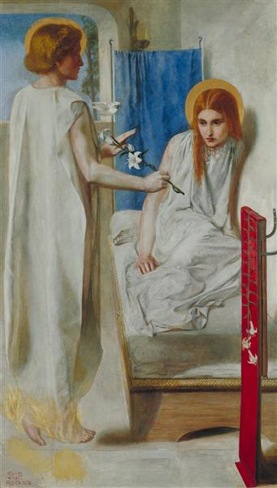البشارة - دانتي جابرييل روسيتي
الجمالية (أيضًا الحركة الجمالية) هي حركة فكرية وفنية تدعم التركيز على القيم الجمالية
أكثر من الموضوعات الاجتماعية السياسية للأدب والفنون الجميلة والموسيقى والفنون
الأخرى، هذا يعني أن الفن من هذه الحركة بالذات ركز أكثر على الجمال بدلاً من أن
يكون له معنى أعمق - "الفن من أجل الفن".
كانت بارزة بشكل خاص في أوروبا خلال
القرن التاسع عشر ، بدعم من شخصيات بارزة مثل أوسكار وايلد ، لكن النقاد
المعاصرين مرتبطون أيضًا بالحركة ، مثل هارولد بلوم ، الذي جادل مؤخرًا ضد
إسقاط الأيديولوجية الاجتماعية والسياسية على الأعمال الأدبية ، والتي يعتقد
أنها كانت مشكلة متنامية في أقسام العلوم الإنسانية على مدى القرن الماضي.
يميل الفنانون والكتاب
ذوو الأسلوب الجمالي إلى التصريح بأن الفنون يجب أن توفر متعة حسية راقية ، بدلاً من
نقل الرسائل الأخلاقية أو العاطفية، نتيجة لذلك ، لم يقبلواجون روسكين، ماثيو أرنولد ،
وتصور جورج ماكدونالد للفن كشيء أخلاقي أو مفيد ، "الفن من أجل الحقيقة". بدلاً من ذلك
، اعتقدوا أن الفن ليس له أي غرض تعليمي، كانت تحتاج فقط إلى أن تكون جميلة.
طور
الجماليات عبادة الجمال التي اعتبروها العامل الأساسي للفن، وأكدوا أن الحياة يجب
أن تنسخ الفنون، لقد اعتبروا الطبيعة بدائية وتفتقر إلى التصميم عند مقارنتها
بالفن.
كانت الخصائص الرئيسية للأسلوب هي: الإيحاء بدلاً من البيان ، والشهوانية
، والاستخدام الكبير للرموز ، والتأثيرات المتزامنة / الفكرية - أي التوافق
بين الكلمات والألوان والموسيقى، حيث تم استخدام الموسيقى لترسيخ الحالة المزاجية.
الحركة التفوقية

التركيب التفوقي - كازمير ماليفيتش
هي حركة فنية تركز على الأشكال الهندسية الأساسية ، مثل الدوائر والمربعات والخطوط
والمستطيلات المرسومة في نطاق محدود
من الألوان، تأسست من قبل كازيمير ماليفيتشفي روسيا ، حوالي عام 1913
، وأعلن في معرض ماليفيتش عام 1915 ، المعرض المستقبلي الأخير للوحات
0.10 ، في سانت بطرسبرغ ، حيث عرض ، جنبًا إلى جنب مع 13 فنانًا آخر
، 36 عملاً بأسلوب مماثل، يشير مصطلح التفوق إلى فن تجريدي قائم
على "سيادة الشعور الفني الخالص" بدلاً من التصوير المرئي للأشياء.
مفهوم التفوق عندما كان بالفعل رسامًا راسخًا ، بعد أن عرض في معرض
Donkey's Tail و Der Blaue Reiter (The Blue Rider) لعام 1912، أدى
انتشار الأشكال الفنية
الجديدة في الرسم
والشعر والمسرح بالإضافة إلى إحياء الاهتمام بالفن
الشعبي التقليدي لروسيا إلى توفير بيئة غنية حيث من خلال الثقاقة ولدت الحداثة.
لقد ابتكر "قواعد" تفوقية تستند إلى أشكال هندسية أساسية، على وجه الخصوص ، المربع والدائرة.
في معرض عام 1915 ، عرض ماليفيتش تجاربه المبكرة في
الرسم التفوقي، كان محور عرضه هو الساحة السوداء، الموضوعة فيما يسمى بالزاوية الحمراء
الجميلة في التقاليد الأرثوذكسية الروسية، مكان الرمز الرئيسي لأي المنزل.
تم رسم
المربع الأسود" عام 1915 وتم تقديمه على أنه طفرة في مسيرته الفنية وفي الفن بشكل
عام، رسم ماليفيتش أيضًا اللون الأبيض على الأبيض والذي تم الإعلان عنه أيضًا كمعلم
رئيسي. يمثل "أبيض على أبيض" تحولًا من التفوق متعدد الألوان إلى التفوق الأحادي اللون.
الحركة الطليعية
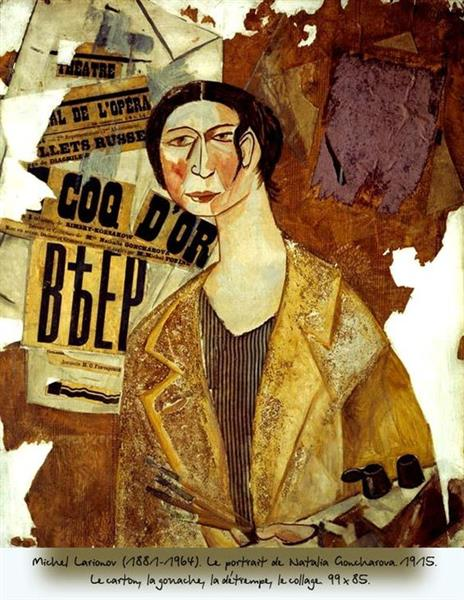نتاليا غوتشاروفا - ميخائيل لاريونوف
الطليعة (من الفرنسية ، "الحرس المتقدم" أو "الطليعة" ، حرفيًا "الحرس الأمامي")
هي أشخاص أو أعمال تجريبية أو راديكالية أو غير تقليدية فيما يتعلق بالفن
أو الثقافة أو المجتمع، قد يتسم بالابتكار الجمالي غير التقليدي
وعدم القبول الأولي، وقد يقدم نقدًا للعلاقة بين المنتج والمستهلك.
تدفع الطليعة حدود ما هو مقبول كقاعدة أو الوضع الراهن، في المقام الأول في
المجال الثقافي، يعتبر البعض أن الطليعية هي السمة
المميزة لـلحداثة، بخلاف ما بعد الحداثة، انضم العديد من الفنانين إلى
الحركة الطليعية وما زالوا يواصلون ذلك.
يشير مفهوم الطليعية في المقام الأول إلى الفنانين والكتاب
والملحنين والمفكرين الذين يتعارض عملهم مع القيم الثقافية السائدة
وغالبًا ما يكون له ميزة اجتماعية أو سياسية قوية، قدم العديد من الكتاب
والنقاد والمنظرين تأكيدات حول ثقافة الطليعة خلال السنوات التكوينية
للحداثة ، على الرغم من أن البيان النهائي الأولي عن الطليعة كان مقال
Avant-Garde and Kitsch بواسطة الناقد الفني في نيويورك كليمنت
جرينبيرج ، الذي نُشر في مراجعة بارتيزان في عام
1939 وكما يوحي عنوان المقال
، جادل جرينبيرج بأن ثقافة الطليعة كانت تاريخياً تعارض الثقافة "العالية" أو "السائدة" ،
وأنها رفضت أيضًا الثقافة الجماهيرية المركبة بشكل مصطنع التي أنتجها التصنيع.كل من هذه
الوسائط هي نتاج مباشر للرأسمالية - فهي كلها الآن صناعات جوهرية - وعلى هذا
النحو فهي مدفوعة بنفس الدوافع المرتكزة على الربح لقطاعات التصنيع الأخرى
، وليس المثل العليا للفن الحقيقي.
بالنسبة إلى جرينبيرج ، كانت هذه
الأشكال بالتالي عبارة عن ثقافة زائفة أو مزيفة أو ميكانيكية ، والتي
غالبًا ما تتظاهر بأنها أكثر مما كانت عليه باستخدام أجهزة رسمية مسروقة
من ثقافة الطليعة. على سبيل المثال ، خلال الثلاثينيات من القرن الماضي ،
كانت صناعة الإعلان في أخذ السلوكيات المرئية منهاالسريالية، ولكن هذا لا يعني أن
الصور الإعلانية في الثلاثينيات من القرن الماضي هي صور سريالية حقًا.
الحركة الدادائية

المرحاض - مارسيل دوشامب
كانت الدادائية أو الدادية حركة فنية أوروبية بدأت أوائل القرن العشرين
،مع مراكز مبكرة في زيورخ، سويسرا في كباريه
فولتير (حوالي عام 1916) ؛ بدأت مدينة نيويورك حركة دادا حوالي عام 1915 ،
وبعد عام 1920 ازدهرت الدادا في باريس.
تطورت حركة دادا كرد فعل للحرب
العالمية الأولى ، وتألفت من فنانين رفضوا المنطق والعقل
والجماليةالمجتمع الرأسمالي الحديث ، وبدلاً من ذلك يعبرون
عن الهراء واللاعقلانية والاحتجاج ضد البرجوازية في أعمالهم.
امتد فن الحركة إلى الوسائط المرئية والأدبية والصوتية ،
بما في ذلك الكولاج والشعر الصوتي والكتابة المقطوعة والنحت.
أعرب
الفنانون الدادائيون عن استيائهم من العنف والحرب والقومية
، وحافظوا على الصلات السياسية مع اليسار الراديكالي،
لا يوجد إجماع على أصل اسم الحركة"الدادا"، هناك قصة
شائعة مفادها أن الفنان النمساوي ريتشارد هولسنبيك أدخل سكينًا عشوائيًا في
قاموس ، حيث اشارت إلى كلمة "دادا" بشكل إعتباطي و عبثي، وهو مصطلح فرنسي عامي يشير إلى حصان خشبي صغير يزاوله الأطفال للعب،
ويشير آخرون إلى أنه يقترح الكلمات الأولى التي ينطق بها الطفل بعمر الأربع سنوات ، مما يستدعي الطفولية
والسخافة التي ناشدت المجموعة، لا يزال آخرون يتوقعون أن الكلمة ربما تم اختيارها
لاستحضار معنى مشابه (أو لا معنى لها على الإطلاق) في أي لغة ، مما يعكس أممية الحركة.
تكمن جذور دادا في طليعة ما قبل الحرب، مصطلح مناهضة الفن، تمهيدا للدادا
،ابتكرت من قبل مارسيل دوشامب حوالي عام 1913 لتمييز الأعمال
التي تتحدى التعريفات المقبولة للفن، التكعيبية وتطوير الكولاج و
الفن التجريدي من شأنه أن يخبر انفصال الحركة عن قيود الواقع والأعراف.
وأعمال شعراء فرنسيين وإيطاليين مستقبليون و التعبيريون الألمان
سيؤثر على رفض الدادائية للارتباط الوثيق بين الكلمات والمعنى.
الحركة البنائية

ملابس الإنتاج للمثل رقم 5 (مسرحية فرناند كروملينك)
كانت البنائية فلسفة فنية ومعمارية نشأت في روسيا ابتداء من عام 1913 فلاديمير تاتلين،
كان هذا رفضًا لفكرة الفن المستقل، أراد "بناء" الفن، كانت الحركة تؤيد
الفن كممارسة للأغراض الاجتماعية، كان للبناءة تأثير كبير على حركات
الفن الحديث في القرن العشرين ، حيث أثرت على الاتجاهات الرئيسية
مثل باوهاوس و دي ستيلحركات.
كان تأثيرها واسع الانتشار ، وكان له
تأثير كبير على الهندسة المعمارية والتصميم الجرافيكي والتصميم
الصناعي والمسرح والأفلام والرقص والأزياء وإلى حد ما الموسيقى.
تم استخدام مصطلح فن البناء لأول مرة كمصطلح ساخر من قبلكازيمير ماليفيتش لوصف عمل الكسندر
رودشينكو في عام 1917، ظهرت البنائية لأول
مرة كمصطلح إيجابي في نعوم جابوالبيان الواقعي لعام 1920، استخدم أليكسي غان
الكلمة كعنوان لكتابه البنائية ، الذي طُبع في عام 1922.
كانت البنائية تطورًا
لما بعد الحرب العالمية الأولى للمستقبل الروسي ، ولا سيما "النقوش المضادة"
لـ فلاديمير تاتلين الذي تم عرضه في عام 1915، اخترع المصطلح نفسه من قبل
النحاتين أنطوان بيفسنر نعوم جابو، الذي طور أسلوبًا صناعيًا زاويًا للعمل
، في حين أن تجريده الهندسي يدين بشيء إلى تفوق كازيمير ماليفيتش.
حركة الحد الأدنى

التكوين رقم 10 - بيت موندريان
في الفنون المرئية والموسيقى والوسائط الأخرى
، يعد التقليلية أسلوبًا يستخدم عناصر تصميم مختصرة،
بدأ الحركة في الفن الغربي بعد الحرب العالمية الثانية ، وبقوة مع الفنون البصرية
الأمريكية في الستينيات وأوائل السبعينيات، يشمل الفنانون البارزون
المرتبطون بالحد الأدنى دونالد جودو - جون مكراكينو - أغنيس مارتنو - دان
فلافينروبرت موريس - آن ترويت، و فرانك ستيلا.
إنه مشتق من الجوانب
الاختزالية لـالحداثة وغالبًا ما يتم تفسيره على أنه رد فعل ضد
التعبيرية المجردة وجسدت حركة الحد الأدنى الممارسات الفنية.
الحد الأدنى في الفن المرئي
، يشار إليها عمومًا باسم" الحد الأدنى من الفن "و" الفن الحرفي "و" ABC Art
"ظهرت في نيويورك في أوائل الستينيات مع انتقال الفنانين الجدد و
الأقدمين نحو التجريد الهندسي، الاستكشاف بالرسم في حالات فرانك ستيلا، كينيث نولاند،
الهيلد، إلسورث كيليو، روبرت رايمانو،و اخرين من المصورين، أما في النحت تجسدت خلال أعمال الفنانين بما
في ذلك ديفيد سميث، أنتوني كاروتوني، سميث سول، ليويتو كارل، أندريه هو، دان فلافينو
دونالد جودو اخرين.
تم عرض منحوتة جود في عام 1964 في غرين غاليري مانهاتن ،
،في حين بدأت معارض مانهاتن
الرائدة الأخرى مثل ليو كاستيلي غاليري، بيس جاليري أيضًا، في عرض
الفنانين الذين يركزون على التجريد الهندسي.
الحركة الميتافيزيقية

الحنين اللانهائي - جورج دي شيريكو
كان الفن الميتافيزيقي أسلوبًا للرسم ازدهر
بشكل رئيسي بين عامي 1911 و 1920 في أعمال
الفنانين الإيطاليين جورجيو دي شيريكو و كارلو
كارا. بدأت الحركة مع دي شيريكو ، الذي
غالبًا ما كانت أعماله الشبيهة بالحلم مع تباين
حاد بين الضوء والظل ذات
جودة غامضة ومهددة بشكل غامض
،اي كتعبير عن "رسم ما لا يمكن رؤيته".
أسس دي شيريكو وشقيقه الأصغر
ألبرتو سافينيو وكارا المدرسة
رسميًا و أرسو مبادئها في عام 1917.
بينما المدرسة المستقبلية رفضت الحركات الحديثة الأخرى بشدة، وحددت الحنين إلى
عظمة إيطاليا الكلاسيكية الباهتة الآن باعتباره تأثيرًا رئيسيًا في فنهم،
طور جورجيو دي شيريكو لأول مرة النمط الذي أطلق عليه فيما بعد الرسم
الميتافيزيقي أثناء وجوده في ميلانو - ومع ذلك ، فقد طور لاحقًا تركيزه
على المساحات الغريبة والمخيفة، استنادًا إلى الساحة الإيطالية
، في المناطق المحيطة الأكثر رقة في فلورنسا، تثير العديد من أعمال De Chirico من فترة فلورنسا
إحساسًا بالانفصال
بين الماضي والحاضر ،
بين الموضوع الفردي
والمساحة التي يسكنها، سرعان ما لفتت هذه
الأعمال انتباه فنانين آخرين مثل كارلو كارا وجورجيو موراندي.
حركة الحداثة
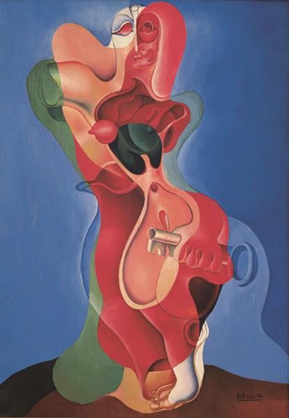المرأة ذات المفتاح - يرفاند كوشار
الحداثة هي حركة فلسفية نشأت ، جنبًا إلى جنب مع الاتجاهات والتغيرات الثقافية
، من تحولات واسعة النطاق وبعيدة المدى في المجتمع الغربي خلال أواخر القرن التاسع
عشر وأوائل القرن العشرين. كان من بين العوامل التي شكلت الحداثة
تطور المجتمعات الصناعية الحديثة والنمو السريع للمدن ، تليها
ردود أفعال الرعب للحرب العالمية الأولى، كما رفضت الحداثة يقين
التفكير التنوير ، ورفض العديد من الحداثيين المعتقد الديني.
تشمل الحداثة، بشكل عام - أنشطة وإبداعات أولئك الذين شعروا بأن الأشكال التقليدية
للفن والعمارة والأدب والعقيدة الدينية والفلسفة والتنظيم
الاجتماعي وأنشطة الحياة اليومية وحتى العلوم، أصبحت غير ملائمة لمهامهم،
وعفا عليها الزمن في البيئة الاقتصادية والاجتماعية والسياسية الجديدة
لعالم صناعي ناشئ بالكامل.
أمر الشاعر عزرا باوند عام 1934 "اجعله جديدًا!"
كان حجر الزاوية في نهج الحركة تجاه ما اعتبرته ثقافة الماضي التي عفا
عليها الزمن. وبهذه الروح ، فإن ابتكاراتها ، مثل رواية تيار الوعي
، والموسيقى الأذنية (أو البانتونية) والموسيقى ذات الاثني عشر نغمة
،حركة الإنقسام و فن تجريدي، جميعها لها سلائف في القرن التاسع عشر.
من السمات البارزة للحداثة الوعي الذاتي والمفارقة فيما يتعلق بالتقاليد الأدبية والاجتماعية
، والتي غالبًا ما أدت إلى تجارب مع الشكل ، جنبًا إلى جنب مع استخدام التقنيات التي
لفتت الانتباه إلى العمليات والمواد المستخدمة في إنشاء اللوحة والقصيدة والبناء
، إلخ ،الحداثة رفضت صراحة أيديولوجيةالواقعية ويستفيد من أعمال الماضي من خلال
استخدام النسخ والدمج وإعادة الكتابة والتلخيص والمراجعة والمحاكاة الساخرة.
يعرّف بعض المعلقين الحداثة على أنها نمط من التفكير - واحدة أو أكثر من الخصائص
المحددة فلسفيًا ، مثل
الوعي الذاتي أو المرجع الذاتي، والتي تمر عبر جميع المستجدات في الفنون والتخصصات.
الأكثر شيوعًا، خاصة في الغرب ، هم أولئك الذين يرون أنه اتجاه فكري تقدمي اجتماعيًا
يؤكد قدرة البشر على خلق بيئتهم وتحسينها وإعادة تشكيلها بمساعدة التجارب العملية
أو المعرفة العلمية أو التكنولوجيا.
من هذا المنظور، شجعت الحداثة على إعادة فحص
كل جانب من جوانب الوجود، من التجارة إلى الفلسفة، بهدف إيجاد ما كان "يعيق" التقدم ،
واستبداله بطرق جديدة للوصول إلى نفس الغاية. يركز آخرون على الحداثة كتأمل جمالي يسهل
هذا النظر في ردود الفعل المحددة لاستخدام التكنولوجيا في الحرب العالمية الأولى ،
والجوانب المناهضة للتكنولوجيا والعدمية لأعمال المفكرين والفنانين المتنوعين
الممتدة من فترة فريدريك نيتشه (1844-1900) إلى صمويل بيكيت (1906-1989). ).
حركة الواقعية السحرية

ويلما - كاريل ويلينك
الواقعية السحرية، أو الواقعية الرائعة هي نوع من الخيال السردي ،
وعلى نطاق أوسع ظهرت ضمن الفن (الأدب ، والرسم ، والسينما ، والمسرح ، وما
إلى ذلك)، حيث شملت مجموعة من المفاهيم المختلفة بمهارة،فأتت لتعبر عن
وجهة نظر واقعية في المقام الأول العالم الحقيقي مع إضافة العناصر السحرية
أو الكشف عنها.
يطلق عليها أحيانًا اسم الخرافة، في إشارة إلى أعراف
الخرافات والأساطير والرموز، غالبًا ما يشير مصطلح "الواقعية السحرية"
،وهو المصطلح الأكثر شيوعًا إلى الخيال والأدب على وجه الخصوص
مع التي سعت لتقديم السحر أو الظواهر الخارقة في عالم واقعي أو بيئة عادية.
المصطلحات وصفية على نطاق واسع وليست صارمة، بشكل نقدي يعرّف ماثيو ستريشر
الواقعية السحرية على أنها "ما يحدث عندما يتم غزو إطار واقعي ومفصل للغاية
بواسطة شيء غريب جدًا بحيث لا يمكن تصديقه". يتم تصنيف العديد من
الكتاب على أنهم "الواقعيون السحريون" ، مما يخلط بين المصطلح
وتعريفه الواسع.
غالبًا ما ترتبط الواقعية السحرية بأدب أمريكا
اللاتينية، وخاصة المؤلفين بما في ذلك مؤسسوا النوع ميغيل أنجيل
أستورياس ، وخورخي لويس بورجيس ، وإيلينا جارو ، وخوان رولفو
، وغابرييل جارسيا ماركيز ، وإيزابيل أليندي. في الأدب الإنجليزي ،
من بين أبرز مؤيديها سلمان رشدي ، وأليس هوفمان ، ونيك جواكين.
لأول مرة في عام 1925 للإشارة إلى أسلوب رسامي يُعرف أيضًا باسم Neue Sachlichkeit
(الموضوعية الجديدة) ، وهو بديل إلى التعبيرية التي دافع عنها زميله مدير
المتحف الألماني غوستاف هارتلوب. حدد روه التفاصيل
الدقيقة للواقعية السحرية ، والوضوح الفوتوغرافي السلس
وتصوير الطبيعة "السحرية" للعالم العقلاني،
إنه يعكس غرابة الناس وبيئتنا التكنولوجية
الحديثة، يعتقد روه أن الواقعية السحرية كانت مرتبطة ،
ولكنها متميزة عن نظيرتها السريالية، بسبب تركيز الواقعية
السحرية على الكائن المادي والوجود الفعلي للأشياء في العالم ،
على عكس الواقع السريالي الأكثر دماغية ونفسية ولاشعورية.
تم استخدام الواقعية السحرية فيما بعد لوصف الغرابة
الواقعية بواسطة الرسامين الأمريكيين مثل إيفان أولبرايت،
بول قدموس ، جورج توكر وهنري كويرنر المولود في فيينا ،
إلى جانب فنانين آخرين خلال الأربعينيات والخمسينيات من
القرن الماضي - ومع ذلك ، على عكس استخدامه في الأدب
، لا يتضمن الفن الواقعي السحري غالبًا محتوى خياليًا
أو سحريًا بشكل واضح ، ولكنه ينظر إلى الأمور العادية
من خلال عدسة شديدة الواقعية وغامضة في كثير من الأحيان.
حركة المناطق (رايون)

رأس الثور - ميخائيل رازينوف
رايونيسم (أو رايزم أو رايونيزم) هو أسلوب فن تجريدي التي تطورت في روسيا عام 1911،
سعى الراونيون إلى فن يتخطى التجريد، خارج الزمان والمكان، وكسر الحواجز بين الفنان والجمهور.
لقد اشتقوا الاسم من استخدام الأشعة الديناميكية ذات الألوان المتناقضة،
والتي تمثل خطوط الضوء المنعكس - عبور الأشعة المنعكسة من كائنات مختلفة.
في معرض الهدف لعام 1913، قدموا الأسلوب للجمهور - وصفوا في أدبهم الرايون بأنه
يشمل بشكل طبيعي جميع الأنماط والأشكال الحالية لفن الماضي
، لأنها، مثل الحياة، هي مجرد نقاط انطلاق لإدراك المتلقي لحركة الرايون وبناءها الخاص للصورة.
حركة الأرت ديكو
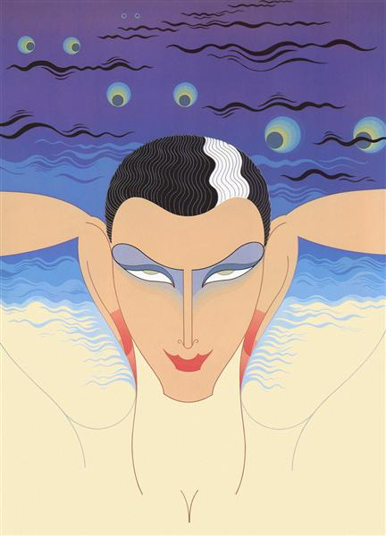ميستر إرني
تجلى فن الآرت ديكو عبر مجموعة من الفنون البصرية -
من الهندسة المعمارية والرسم والنحت إلى فنون الرسم والزخرفة،
بينما كان ممارسو آرت ديكو غالبًا ما يشيدون بالتأثيرات الحداثية
مثلال تكعيبية و حركة دي ستيل، و المدرسة مستقبلية.
كانت المراجع غير مباشرة. كان الأمر كما
لو كانوا يأخذون نتائج عقود قليلة من تقطير التراكيب لأبسط الأشكال ويبتكرون أسلوبًا
جديدًا يمكن أن يكون ممتعًا بصريًا ولكن لا يمثل تهديدًا فكريًا،
تم تسميته على اسم المعرض الدولي للفنون الزخرفية والصناعية الحديثة الذي أقيم في باريس عام 1925 ، ويمكن اعتبار آرت ديكو خليفة له ورد فعل ضده.فن حديث. شوهد في الأثاث والفخار والمنسوجات والمجوهرات والزجاج وما
إلى ذلك ، وكان أيضًا أسلوبًا بارزًا في السينما وهندسة الفنادق. يحاول
Art Deco ، على غرار Art Nouveau ، إضفاء اللمسات الفنية على الأشياء الوظيفية.
يتمثل الاختلاف الرئيسي بينه وبين فن الآرت نوفو
في تأثير التكعيبية ، والذي يمنح تصميم آرت ديكو بشكل عام طابعًا هندسيًا أكثر
تجزئة. ومع ذلك ، ظلت الصور القائمة على أشكال النباتات والمنحنيات المتعرجة
في بعض تصميمات آرت ديكو ، على سبيل المثال ، تصميم كلاريس كليف في بريطانيا.
كان آرت ديكو شديد التنوع في التأثيرات، مستوحى من العصور القديمة فن مصريو
ازتيك، وغيرها من الفنون القديمة في أمريكا الوسطى، وكذلك من تصميم السفن
والقطارات والسيارات الحديثة، كما أنها اعتمدت على الهندسة المعمارية الحديثة
وتصميم باوهاوس، والمهندسين المعماريين مثل لو كوربوزييه و ميس فان دير روه.
حركة التزامن

أربعة أجزاء (رقم 7) - مورغان راسل
كان التزامن حركة فنية تأسست عام 1912 من قبل الفنانين الأمريكيين
Stanton MacDonald-Wright (1890-1973) و مورجان راسل(1886-1953)،
كان "تزامنهم" التجريدي، المستند إلى نهج
لرسم ذلك اللون المماثل للموسيقى
،من بين اللوحات التجريدية
الأولى في الفن الأمريكي.
على الرغم
من أنها لم تدم طويلاً ولم تجتذب
العديد من الأتباع ، فقد أضحت حركة التزامن أول حركة فنية أمريكية
طليعية تحظى باهتمام دولي - ترتبط
إحدى الصعوبات المتأصلة في وصف التزامن كأسلوب متماسك
بحقيقة أن بعض أعمال المتزامنين هي أعمال تجريدية بحتة بينما يتضمن البعض الآخر صورًا تمثيلية.
يعتمد التزامن على فكرة أن اللون والصوت ظاهرتان متشابهتان وأن الألوان
في اللوحة يمكن تنسيقها بنفس الطريقة المتناغمة التي يرتبها المؤلف الموسيقي
في سيمفونية، اعتقد ماكدونالد رايت ورسل أنه من خلال الرسم بمقاييس الألوان، يمكن
لعملهم المرئي أن يثير نفس الأحاسيس المعقدة مثل الموسيقى - كما قال ماكدونالد رايت
، "التزامن تعني ببساطة" مع اللون "حيث تعني السيمفونية" مع الصوت. "" إن ظاهرة "سماع" لون أو
اقتران اثنين أو أكثر من الحواس - الحس المواكب - كانت أيضًا مركزية في عمل فاسيلي كاندينسكي،
الذي كان يطور لوحاته الخاصة أو "التراكيب" في أوروبا في نفس الوقت تقريبًا.
النبذة مختصرة تعتمد
"التزامن" على مقاييس الألوان ، باستخدام أشكال لونية متناغمة مع درجات متقدّمة و كثافة قليلة نسبياً.
عادة ما يكون لها دوامة مركزية وتنفجر في تناسق لوني معقد.
تجنب المتزامنون استخدام
منظور أو خط جوي ، معتمدين فقط على اللون والشكل للتعبير عن الشكل، كان ماكدونالد
رايت ورسل من بين عدد من الفنانين الطليعيين الذين عملوا في الفترة التي سبقت الحرب
العالمية الأولى مباشرة والذين اعتقدوا أن الواقعية في الفنون البصرية قد وصلت منذ
فترة طويلة إلى نقطة الإنهاك ، وأن تكون ذات مغزى في العالم الحديث، كان الرسم
ضروريًا لقطع أي روابط مع الأفكار القديمة حول المنظور والمحتوى الأدبي أو القصصي.
حركة الدوامة
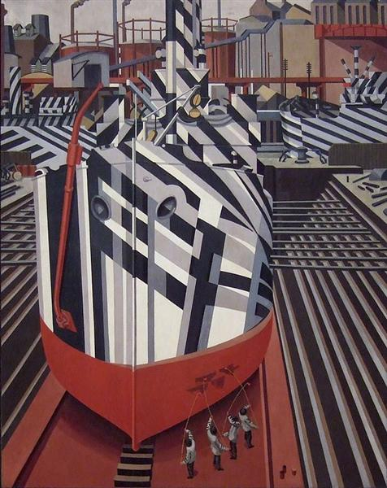سفن دازل في حوض جاف في ليفربول - إدوارد وادزورث
كانت حركة الدوامة قصيرة الأمد في الفن والشعر البريطاني في أوائل القرن العشرين ،
مستوحاة جزئيًا من المدرسة التكعيبية، تم الإعلان عن الحركة في عام 1914 في العدد الأول من BLAST ، والذي احتوى
على بيانها ورفض الحركة للمناظر الطبيعية والعراة لصالح أسلوب
هندسي يميل نحوالتجريد - في النهاية ، كانت مشاهدتهم لكارثة بشرية تتكشف في الحرب
العالمية الأولى هي التي "استنزفت هؤلاء الفنانين من حماستهم الدوامية". كان مقر
Vorticism في لندن ولكنه كان بنظرهم حركة عالمية ليس لها مكان محدد.
تم عرض اللوحات التجريبية والمنحوتات باستخدام التبسيط الزاوي والتجريد ، من قبل لويس، وادزورث ،
وشكسبير وآخرين ، في مركز الفنون المتمردة في عام 1914 ، قبل تشكيل مجموعة
Vorticist، كان هذا العمل معاصرًا وقابلًا للمقارنة بالتجريد من قبل فنانين أوروبيين
مثل فاسيلي كاندينسكي و فرانتيشك كوبكا ومجموعة رايست الروسية.
أقام Vorticists
معرضًا واحدًا فقط ، في عام 1915 ، في Doré Gallery في لندن. تضمن القسم الرئيسي من المعرض
أعمال جيسيكا ديسمور وفريدريك
إيتشلز ولويس وغودييه برزيسكا وويليام
روبرتس وهيلين سوندرز وإدوارد وادسورث. كانت هناك منطقة قسم أصغر بعنوان
"أولئك الذين تمت دعوتهم للعرض" والتي تضم العديد من الفنانين الآخرين.جاكوب
ابستينلم يتم تمثيله بشكل ملحوظ ، على الرغم من استنساخ رسوماته في بلاست.
حركة النقاء
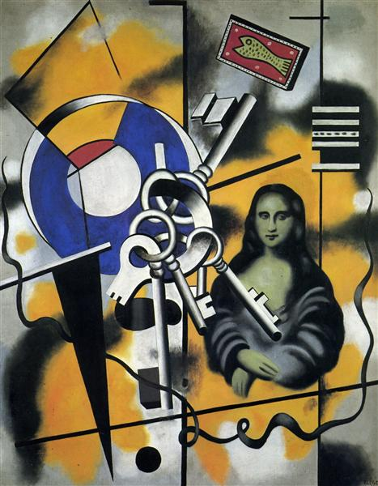الموناليزا بالمفاتيح - فرناند ليجر
نقاء ، في إشارة إلى الفنون
، كانت حركة حدثت بين 1918-1925 أثرت على الرسم والعمارة الفرنسية، النقاء
كان يقودها أميدي أوزينفانت و شارل إدوار جانيريه (لو كوربوزييه)،
الذين ابتكروا شكلاً جديداً من التكعيبية أطلقوا فيما بعد عليها مصطلح النقاوة.
حركة الدقة
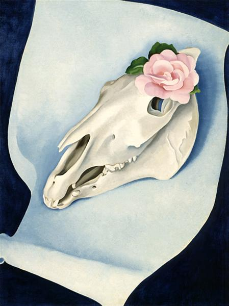جمجمة الحصان مع الوردة الوردية - جورجيا أوكيفي
كانت الدقة أول حركة أصلية للفن الحديث في الولايات المتحدة ومساهمة أمريكية مبكرة في صعود الحداثة،
احتفل الأسلوب الدقيق ، الذي ظهر لأول مرة بعد الحرب
العالمية الأولى وكان في ذروة شعبيته خلال عشرينيات وأوائل ثلاثينيات القرن الماضي ، بالمناظر الطبيعية
الأمريكية الجديدة لناطحات السحاب والجسور والمصانع في شكل أطلق عليه أيضًا اسم "الواقعية التكعيبية" .
" تمت صياغة مصطلح "الدقة" لأول مرة في منتصف عشرينيات القرن الماضي ، ربما من قبل مدير متحف الفن
الحديث ألفريد إتش بار، كان الرسامون الذين يعملون بهذا الأسلوب يُعرفون أيضًا باسم "طاهر" ،
وهو المصطلح الأكثر استخدامًا في ذلك الوقت. تشير صلابة كل من الملصقات الفنية والتاريخية
إلى الصعوبات التي واجهها النقاد المعاصرون في محاولة تمييز هؤلاء الفنانين.
تأثر أصحاب هذه الحركة بالمدرسة التكعيبية و المستقبلية، أخذت الدقة لموضوعاتها الرئيسية التصنيع وتحديث المشهد الأمريكي ، والتي تم
تصوير هياكلها بأشكال هندسية دقيقة ومحددة بشكل حاد، اعتبر الفنانون الدقيقون أنفسهم أمريكيين
تمامًا وكان البعض مترددًا في الاعتراف بتأثيرهم بالتقنيات الفنية الأوروبية.
ومع ذلك ، كان من الواضح في
ذلك الوقت أن تكسير الطائرات في العديد من اللوحات الدقيقة ينشأ في تكعيب رسام وليجر، وبالمثل ،
فإن التصورات الدقيقة لأعمدة الضوء مثل "خطوط القوة" المرسومة بشكل صارم هي استعارة واضحة من
المستقبلية - في النهاية ، لم تكن الدقة تتعلق بالأصالة
الخالصة للتعبير بقدر ما كانت تتعلق بالاستخدام الأمريكي النشط ودمج بعض تقنيات
الحداثة الأوروبية.
حركة الزنوج (نهضة هارلم)

بورتريه ذاتي - هوراس بيبين
يشير مصطلح نهضة هارلم إلى الازدهار الغزير للفنون الأدبية والمرئية والموسيقية داخل المجتمع الأمريكي الأفريقي
الذي ظهر حوالي عام 1920 في حي هارلم بمدينة نيويورك، كانت الفنون المرئية أحد مكونات التطور الثقافي
الغني ، بما في ذلك العديد من التعاون متعدد التخصصات، حيث عمل الفنانون بشكل وثيق مع
الكتاب والناشرين وكتاب المسرح والموسيقيين.
لم يكن هناك أسلوب واحد يحدد نهضة هارلم ،
بل وجد الفنانون طرقًا مختلفة للاحتفال بالثقافة والهوية الأمريكية الأفريقية، في كثير من
الأحيان ، قاموا بدمج عناصر من الفن الأفريقي مع الموضوعات المعاصرة
، وخلقوا رابطًا كرم ووسع تاريخ تجربة الأمريكيين من أصل أفريقي
، لمواجهة الرسوم الكاريكاتورية المهينة التي هيمنت على الثقافة الشعبية.
لفناني نهضة هارلم الذين يبحثون عن نماذج
احترافية للأمريكيين الأفارقة فقط هنري أوساوا تانر و ماري إدمونيا لويس الذين اكتسبوا شهرة
ونجاح دوليين - ومع ذلك ، في مواجهة التمييز العنصري والقيود المهنية في أمريكا ،
أمضى كلا الفنانين معظم حياتهم في أوروبا (تانر في باريس ولويس في روما) حيث وجدا
بيئة ثقافية وفنية أكثر تسامحًا في العقود التي تلت الحرب الأهلية الأمريكية.
حركة المتأمرون

البحر الأحمر (دراسة الشفق القطبي) ألفونس ألايس
كانت حركة المتآمرين (Les Arts incohérents) حركة فنية فرنسية
قصيرة العمر أسسها الكاتب والناشر الباريسي Jules Lévy (1857-1935) في عام 1882 ، والتي
توقعت في استخفافها الساخر
العديد من التقنيات والمواقف
الفنية التي ارتبطت لاحقًا
بـ طليعيو مكافحة الفن.
صاغ ليفي عبارة les Arts incohérents على أنها مسرحية للتعبير الشائع les Arts décoratifs
(أي الفنون والحرف اليدوية
، ولكن قبل كل شيء ، مدرسة الفنون
الشهيرة في باريس ، المدرسة الوطنية للفنون الزخرفية). قدم المتضامنون عملاً غير عقلاني ومثير
للأيقونات ، "وجدوا" أشياء فنية ، ورسومات فكاهية غير منطقية ، ورسومات للأطفال ، ورسومات
"صنعها أشخاص لا يعرفون كيفية الرسم،" عرض ليفي لوحة سوداء بالكامل للشاعر بول بلهود تسمى Combat de Nègres dans un
Tunnel (Negroes Fight in a Tunnel)، ساهم رسام الرسوم
المتحركة السينمائي المبكر إميل كوهل بالصور التي سميت لاحقًا سريالية.
على الرغم من صغر حجمهم كأعضاء و العمر القصير للحركة ، إلا أن المتآمرين كانوا بالتأكيد معروفين جيدًا،
توقفت الحركة في منتصف تسعينيات القرن التاسع عشر.
حركة الأصلانية
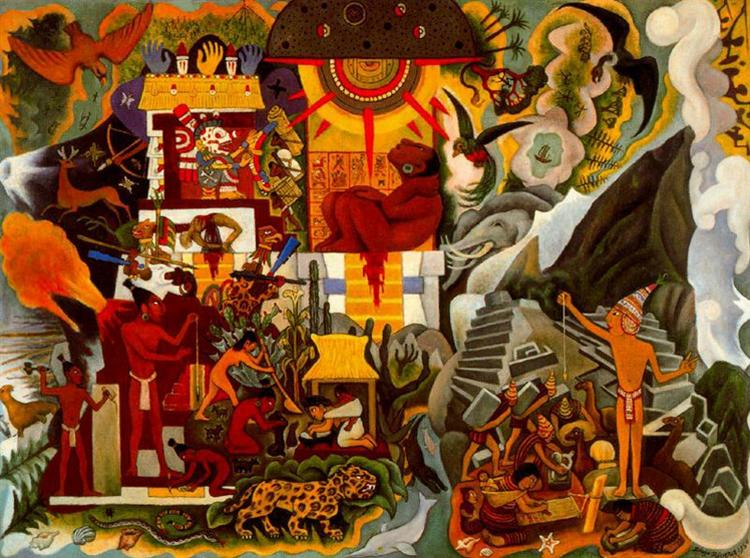أمريكا ما قبل الإسبانية - دييغو ريفييرا
هناك عدة معانٍ تتعلق بكلمة Indigenism ، ولكن في سياق الفن المرئي ، يشير المصطلح إلى حركة
نشأت في أمريكا اللاتينية خلال عشرينيات القرن
الماضي وشهدت فنانين يقاتلون ضد هيمنة الفن
الأوروبي لصالح صنع الفن حول ثقافتهم.
التي احتضنت الفن ما قبل الكولومبي.
دائمًا ما يكون الفن المرتبط بالأنديجينية رمزيًا ،
مع موضوعات تركز على التراث الثقافي للبلد وتقاليده ، فضلاً عن معتقداتهم الروحية.
في المكسيك خلال الثورة ، رسامو الجداريات المكسيكيون ديجو ريفيراو خوسيه كليمنتي، أوروزكوو ديفيد، ألفارو سيكيروس
و روفينو تامايواعتنقوا النزعة الأصلية:
كانوا ملتزمين بالترويج للثقافة المكسيكية وصورت لوحاتهم الجدارية تاريخ بلادهم وشعبها.
الحركة الإقليمية

الغوتيية الأمريكية - جرانت وود
الإقليمية الأمريكية - أمريكية واقعية، حركة الفن الحديث التي تضمنت اللوحات والجداريات والمطبوعات الحجرية
والرسوم التوضيحية التي تصور مشاهد واقعية لأمريكا الريفية والبلدات الصغيرة بشكل أساسي في الغرب الأوسط
والجنوب العميق، نشأت في الثلاثينيات كرد فعل على الكساد الكبير، وانتهت في الأربعينيات
بسبب نهاية الحرب العالمية الثانية ونقص التطور داخل الحركة، وصلت إلى ذروة شعبيتها
من عام 1930 إلى عام 1935 ، حيث تم تقديرها على نطاق واسع بسبب صورها المطمئنة عن قلب
أمريكا خلال فترة الكساد الكبير.
على الرغم من الاختلافات الأسلوبية الرئيسية بين فنانين
إقليميين معينين ، كان الفن الإقليمي بشكل عام في أسلوب محافظ وتقليدي نسبيًا يستحوذ
على الحساسيات الأمريكية الشعبية، بينما يعارض بشدة الهيمنة المتصورة للفن الفرنسي.
قبل الحرب العالمية الثانية ، كان مفهوم الحداثة لديهم لم يتم تعريفه بوضوح في سياق الفن الأمريكي، كان هناك
أيضًا صراع لتحديد نوع فريد من الفن الأمريكي، في طريق تحديد ماهية الفن الأمريكي، رفض الفنانون
الأمريكيون الاتجاهات الحديثة المنبثقة عن معرض الأسلحة والتأثيرات الأوروبية خاصة من مدرسة باريس.
من خلال
رفض الأساليب التجريدية الأوروبية، اختار الفنانون الأمريكيون تبنيها للأكاديميات الواقعيةالتي صورت مشاهد أمريكية
حضرية وريفية، جزئيًا بسبب الكساد الكبير أصبحت الإقليمية واحدة من الحركات الفنية المهيمنة في أمريكا في
الثلاثينيات من القرن الماضي ، بالإضافة للواقعية الاجتماعية، في ذلك الوقت ، كانت الولايات المتحدة لا تزال
دولة زراعية بكثافة حيث يعيش جزء أقل بكثير من سكانها في المدن الصناعية مثل مدينة نيويورك أو شيكاغو.
American Scene Painting هو مصطلح شامل للإقليمية
الأمريكية والواقع الاجتماعي المعروفة باسم الواقعية الحضرية، ينقل الكثير من رسم
المشهد الأمريكي إحساسًا بالقومية والرومانسيةفي صور الحياة اليومية الأمريكية.
نشأ هذا الإحساس بالقومية من رفض الفنانين لاتجاهات الفن الحديث بعد الحرب العالمية
الأولى ومعرض مخزن الأسلحة.
خلال الثلاثينيات من القرن الماضي ، وثق هؤلاء الفنانون
وصوروا المدن الأمريكية والبلدات الصغيرة والمناظر الطبيعية الريفية - فعل
البعض ذلك كوسيلة للعودة إلى وقت أبسط بعيدًا عن التصنيع بينما سعى البعض الآخر
إلى إصدار بيان سياسي وإقراض فنهم لأسباب ثورية وجذرية.
غالبًا ما تسمى الأعمال
التي تركز على الموضوعات المحلية والبلدات الصغيرة "الإقليمية الأمريكية" ، وتسمى
الأعمال التي تصور المشاهد الحضرية ذات الوعي السياسي والاجتماعي"الواقع الاجتماعي".
حركة الواقعية الإشتراكية

الأجانب في لينن غراد - إيفان فلاديميروف
الواقعية الاشتراكية هي اسلوب فن واقعي تم تطويره في الاتحاد السوفيتي وأصبح أسلوبًا مهيمنًا
في ذلك البلد وكذلك في البلدان الاشتراكية الأخرى، تتميز الواقعية الاشتراكية بالتصوير المجيد للقيم
الشيوعية، مثل تحرر البروليتاريا، عن طريق الصور الواقعية - على الرغم من أنه مرتبط ، لا ينبغي
الخلط بينه وبين حركة الواقع الاجتماعي،ويقصد هنا الحركة الواقعية الإجتماعيةالتي تعتبر نوع من الفن يصور بشكل واقعي الموضوعات ذات الاهتمام الاجتماعي.
كانت الواقعية الاشتراكية هي الشكل السائد للفن المعتمد في
الاتحاد السوفيتي منذ تطوره في أوائل عشرينيات القرن الماضي إلى سقوطه في نهاية المطاف من
شعبيته في أواخر الستينيات. بينما استخدمت دول أخرى قانونًا فنيًا محددًا، استمرت الواقعية
الاشتراكية في الاتحاد السوفيتي لفترة أطول وكانت أكثر تقييدًا من أي مكان آخر في أوروبا.
تم تطوير الواقعية الاشتراكية من قبل عدة آلاف من الفنانين، عبر مجتمع متنوع
، على مدى عدة عقود، تشمل الأمثلة المبكرة للواقعية في الفن الروسي أعمال
Peredvizhnikis وايليا يفيموفيتش ريبين في حين أن هذه
الأعمال ليس لها نفس الدلالة السياسية فإنها تعرض التقنيات التي مارسها
خلفاؤهم، بعد سيطرة البلاشفة على روسيا في 25 أكتوبر 1917 ، كان هناك
تحول ملحوظ في الأساليب الفنية - كانت هناك فترة قصيرة من الاستكشاف
الفني في الفترة ما بين سقوط القيصر وصعود البلاشفة في عام 1917
، بدأ الفنانون الروس بالعودة إلى الأشكال التقليدية للفن والرسم.
كانت هناك مجموعتان رئيسيتان تناقشان مصير الفن السوفيتي: المستقبليون والتقليديون.
يعتقد المستقبليون الروس، الذين كان العديد منهم قد ابتكروا
الفن التجريدي أو اليساري قبل البلاشفة، أن الشيوعية تتطلب قطيعة كاملة من الماضي ،
وبالتالي ظهر الفن السوفيتي، أما التقليديون فيؤمنون بأهمية التمثيلات الواقعية للحياة اليومية.
تحت حكم لينين والسياسة الاقتصادية الجديدة، كان هناك قدر معين من المشاريع التجارية
الخاصة ، مما سمح لكل من المستقبليين والتقليديين بإنتاج فنهم للأفراد ذوي رأس المال.
بحلول عام 1928 ، كان لدى الحكومة السوفيتية ما يكفي من القوة والسلطة لإنهاء الشركات
الخاصة، وبالتالي إنهاء الدعم للمجموعات الهامشية مثل المستقبليين. في هذه المرحلة ،
على الرغم من عدم استخدام مصطلح "الواقعية الاشتراكية" ،أصبحت خصائصه المميزة هي القاعدة.
الحركة التصويرية
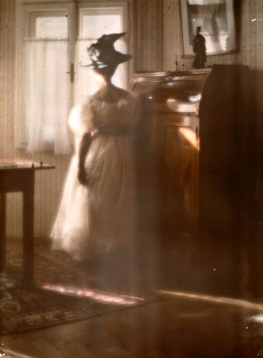ماري وارنر في كونتر جور - هاينريش كون
التصويرية هو الاسم الذي يطلق على الأسلوب الدولي والحركة الجمالية التي سيطرت على التصوير
الفوتوغرافي خلال أواخر القرن التاسع عشر وأوائل
القرن العشرين. لا يوجد تعريف موحد للمصطلح، ولكنه يشير بشكل عام إلى أسلوب يتلاعب
فيه المصور بطريقة ما بما يمكن أن يكون صورة مباشرة كوسيلة "لإنشاء" صورة بدلاً
من مجرد تسجيلها - عادة، يبدو أن الصورة الفوتوغرافية تفتقر إلى التركيز الحاد
(بعضها أكثر من البعض الآخر) ،وتتم طباعتها بلون واحد أو أكثر غير الأبيض والأسود
(تتراوح من البني الدافئ إلى الأزرق الداكن) وقد يكون لها ضربات فرشاة مرئية أو
غيرها التلاعب بالسطح. بالنسبة إلى المصور، كانت الصورة، مثل اللوحة
أو الرسم أو النقش ، وسيلة لإسقاط نية عاطفية في عالم خيال المشاهد.
ازدهرت التصويرية كحركة من حوالي عام
1885 إلى عام 1915 ، على الرغم من استمرار الترويج لها من قبل البعض حتى أواخر الأربعينيات - بدأ
ردًا على الادعاءات القائلة بأن الصورة ليست أكثر من مجرد تسجيل بسيط للواقع، وتحولت إلى
حركة دولية لتعزيز مكانة كل التصوير الفوتوغرافي كشكل فني حقيقي لأكثر من ثلاثة عقود، ناقش
الرسامون والمصورون والنقاد الفنيون الفلسفات الفنية المتعارضة، وبلغت ذروتها في نهاية
المطاف في الحصول على الصور من قبل العديد من المتاحف الفنية الكبرى.
انخفضت شعبية التصوير الفوتوغرافي تدريجيًا بعد عام 1920 ،
على الرغم من أنها لم تتلاشى من شعبيتها حتى نهاية الحرب العالمية الثانية. خلال هذه
الفترة النمط الجديد للتصوير الفوتوغرافيالحداثةأصبح رائجًا، وتحول اهتمام الجمهور
إلى صور أكثر حدة. بدأ العديد من المصورين المهمين في القرن العشرين حياتهم المهنية
بأسلوب تصويري لكنهم انتقلوا إلى التصوير الفوتوغرافي شديد التركيز بحلول الثلاثينيات.
الحركة الرومانسية الجديدة
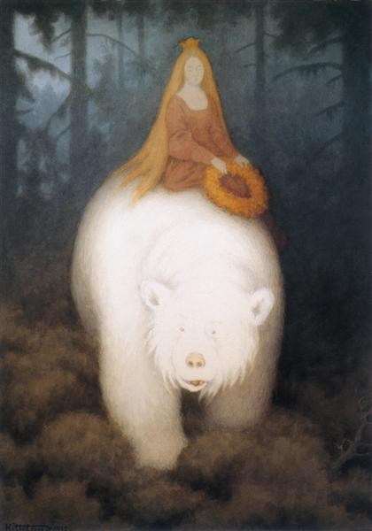ملك الدب الأبيض فاليمون - تيودور سيفيرين كيتلسن
يستخدم مصطلح الرومانسية الجديدة لتغطية مجموعة متنوعة من الحركات في الفلسفة والأدب والموسيقى
والرسم والهندسة المعمارية ، وكذلك الحركات الاجتماعية ، التي توجد بعد وتضمين عناصر من عصر الرومانسية.
وقد تم استخدامه للإشارة إلى الملحنين في أواخر القرن التاسع عشر مثل ريتشارد فاجنر وخاصة من قبل كارل
داهلهاوس الذي يصف موسيقاه بأنها "ازدهار متأخر للرومانسية في العصر الحالي" - يعتبرها مرادفًا لـ "عصر فاجنر"
، من حوالي 1850 حتى 1890 - بداية عصر الحداثة، والتي كان أبرز ممثليها الأوائل ريتشارد شتراوس وغوستاف مالر
(Dahlhaus 1979، 98–99، 102، 105). تم تطبيقه على الكتاب والرسامين
والملحنين الذين رفضوا أو تركوا أو عارضواالواقعيةأو المذهب الطبيعي أو
الحداثة الطليعية في نقاط زمنية مختلفة من حوالي عام 1840 وحتى الوقت الحاضر.
تعتبر الرومانسية الجديدة والرومانسية على حد سواء
معارضة للمذهب الطبيعي - في الواقع، فيما يتعلق بالموسيقى، تعتبر الطبيعية غريبة وحتى معادية
(Dahlhaus 1979، 100). في الفترة التي أعقبت توحيد ألمانيا في عام 1871، رفضت المذهب
الطبيعي الأدب الرومانسي باعتباره تشويهًا مثاليًا للواقع - أصبحت المذهب الطبيعي
بدوره غير قادر على ملء "فراغ" الوجود الحديث. جاء النقاد مثل هيرمان بحر
وهاينريش مان ويوجين ديديريتش لمعارضة الطبيعة والمادية تحت شعار "الرومانسية
الجديدة"، مطالبين بإعادة توجيه ثقافي يستجيب لـ "توق الروح إلى معنى
ومحتوى في الحياة" قد يحل محل تجزئة المعرفة الحديثة مع نظرة شاملة للعالم (Kohlenbach 2009 ، 261).
الحركة الرسائلية (الحروفية)

أوجاتوو - جواو فييرا
الحركة الرسائلية بداية النشأة كانت في فرنسا تحديداً في باريس في منتصف الأربعينيات من القرن الماضي من قبل مهاجر
روماني إيزيدور إيسو، في مجموعة عمل يبلغ مجموعها مئات المجلدات، طبق إيسو مبادئ الحركة الدادائية، ورفض معظم الآخرين ووصفهم بالانتحال
والمزيفين، كان لأندريه بريتون تأثير كبير بين السرياليين لكن إيسو كان
غير راضٍ عما اعتبره الركود والإفلاس النظري للحركة كما كانت في الأربعينيات.
في الفرنسية ، تسمى الحركة Lettrisme من الكلمة الفرنسية للحرف والتي نشأت
من حقيقة أن العديد من أعمالهم المبكرة تركزت على
الحروف وغيرها من الرموز المرئية أو المنطوقة، يفضل الرسائليون أنفسهم التهجئة "Letterism"
للمصطلح Anglicised ، وهذا هو الشكل الذي يستخدم في تلك المناسبات النادرة
عندما ينتجون أو يشرفون على ترجمات إنجليزية لكتاباتهم: ومع ذلك، فإن "Lettrism"
شائع على الأقل في
استخدام اللغة الإنجليزية.
ظل المصطلح ، الذي كان الاسم الأصلي الذي أُعطي لأول مرة للمجموعة
، مصطلحًا شاملاً لتغطية جميع أنشطتهم ، حتى مع انتقال العديد من هؤلاء بعيدًا عن أي اتصال
بالحروف لكن تم إدخال أسماء أخرى أيضًا إما للمجموعة ككل أو لأنشطتها في مجالات محددة
، مثل
"الحركة Isouian" ،
"انتفاضة الشباب "، و" hypergraphics "، و" الإبداع "، و" الفن متناهية الصغر "و" الاستثارة ".
حركة الشباب البولندي
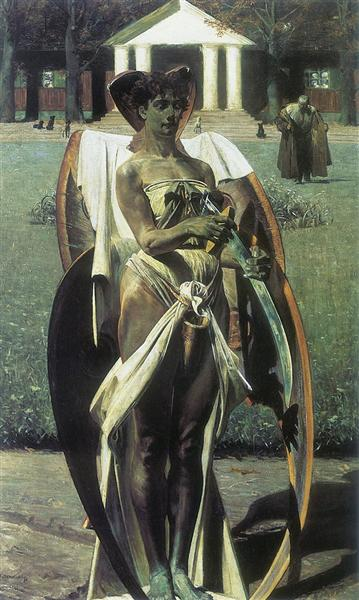ثاناتوس - كاسيك مالشفسكي
يونغ بولاند أو الحركة الشبابية البولندية، كانت الحداثة فترة في الفنون البصرية والأدب والموسيقى البولندية، تغطي ما
يقرب من السنوات ما بين 1890 و 1918،
نتيجة لمعارضة جمالية قوية للأفكار السابقة
للوضعية التي أعقبت قمع انتفاضة يناير
1863 ضد جيش الاحتلال الإمبراطوري الروسي.
روج الشباب الحركة البولندية و أتباعها اتجاهات الانحطاط،الرومانسية
الجديدة و رمزيةو
انطباعية و الفن الحديث،
الأدب البولندي في تلك
الفترة قائمًا على مفهومين رئيسيين، كان ذلك في وقت سابق خيبة أمل حداثية نموذجية من
البرجوازية وأسلوب حياتها وثقافتها، يؤمن الفنانون الذين يتبعون هذا المفهوم أيضًا
بالانحطاط، و نهاية كل ثقافة والصراع بين البشر وحضارتهم و مفهوم الفن باعتباره
أعلى قيمة (الفن من أجل الفن).
المؤلفون الذين اتبعوا هذا المفهوم شملوا
Kazimierz Przerwa-Tetmajer و Stanisław Przybyszewski و Wacław Rolicz-Lieder و Jan Kasprowicz -
كان المفهوم اللاحق استمرارًا لـ الرومانسية، وعلى هذا النحو يطلق عليه غالبًا
الرومانسية الجديدة، كانت مجموعة الكتاب الذين اتبعوا هذه الفكرة أقل تنظيماً حيث قاموا
الكتاب أنفسهم بتغطية مجموعة كبيرة ومتنوعة من الموضوعات في كتاباتهم: من الإحساس
بمهمة القطب في نثر ستيفان سيرومسكي، من خلال عدم المساواة الاجتماعية التي وصفها Władysław Reymont و
Gabriela Zapolska إلى نقد البولندية المجتمع والتاريخ البولندي من قبل ستانيسلاف ويسبيانسكي.
في فترة بولندا الشابة ، لم تكن هناك اتجاهات ساحقة في الفن البولندي حاول الرسامون والنحاتون
مواصلة التقاليد الرومانسية بطرق جديدة للتعبير انتشرت في الخارج كان
الاتجاه الأكثر تأثيرًا هو الفن الحديث، على الرغم من أن الفنانين البولنديين
بدأوا في البحث أيضًا عن شكل من أشكال النمط الوطني (بما في ذلك أسلوب
zakopiański أو أسلوب Zakopane). تأثر أيضاً كل من النحت والرسم بشكل كبير بجميع أشكال الرموز.
حركة التعبيرية المجردة

رقم 17 - جاكسون بولوك
التعبيرية التجريدية هي الحركة الفنية للرسم غير التمثيلي في الغالب. ازدهرت في
الولايات المتحدة في أربعينيات وخمسينيات القرن الماضي. على الرغم من اسمها
إلا أنها لم تكن مجردة تمامًا ولا تعبيريًا وتتألف من عدة أنماط مختلفة تمامًا.
ما وحدها في حركة فنية واحدة كان نية إعادة تعريف طبيعة الرسم.
أصبح ظهور التعبيرية المجردة وانتشارها السريع ممكنًا بسبب عدة عوامل، الأول كان
وصول العديد من الفنانين المعاصرين إلى الولايات المتحدة من الأنظمة الشمولية الأوروبية في الثلاثينيات
وكوارث الحرب في الأربعينيات (ارشيلي جوركيو - هانز هوفمانو - جورج جروسو - فرناند
ليجرو - جوزيف ألبرزو - بيت موندريانو -مارسيل دوشامب - إيف تانجويو - ماكس ارنست)،
والثاني هو ظهور شبكة جديدة تمامًا من متاحف ومعارض نيويورك
التي أقامت (لأول مرة في الولايات المتحدة) معارض رئيسية للفن الأوروبي الحديث
.
تنبع التعبيرية المجردة من تجاوز الكساد الكبير (عندما عانت الولايات المتحدة اقتصاديًا
و على عكس أوروبا كانت معزولة ثقافيًا ومحلية) ومن التغلب على صدمة ما بعد الحرب الجماعية، اثنتان من
الحركات الفنية الأمريكية الرئيسية في الثلاثينيات -الحركة الإقليمية و حركة الواقع الاجتماعي - لم يكونوا
ملائمين لتوفير لغة لواقع، لكن بالنظير تم التعبير عنها في الفلسفة الوجودية التي رفضت الثقة
في العقل والإنسانية والتقدم العلمي والتكنولوجي، ونظرت بنظرة مأساوية للعالم
، وشعور بالوحدة.
انعكس هذا التصور للواقع
في التعبيرية المجردة و استؤنفت هذه الحركة في الولايات المتحدة حيث بدأ الاتجاه في
أوروبا بالفن التجريدي والسريالية، لقد حرر الفن من قوانين المنطق وقوانين تركيب
الألوان التي وضعتها الثقافة الأوروبية وأشارت إلى الدين والأسطورة وفوضى اللاوعي.
ظهرت التعبيرية المجردة في "نسختين" مختلفتين - الأول كان اسلوب الرسم (جاكسون بولوكو - فيليم دي كونينج)
، حيث استخدم الفنان إيماءات تعبيرية عفوية لرش الدهانات ورسم الخطوط، أما النسخة الثانية هو اسلوب الرسم الميداني
(بارنيت نيومانو - مارك روثكو) ،مما أجبر الفنانين على العمل بمجموعة كبيرة من الألوان
بطريقة أكثر هدوءًا، فيما بعد تم توحيد كلا الإصدارين من خلال الحجم الهائل للقماش (والمنحوتات) ،
من خلال تدفق الألوان دون قيود ، والتأكيد على عملية إنشاء الصورة (بدلاً من النتيجة).
حركة الأورفيين
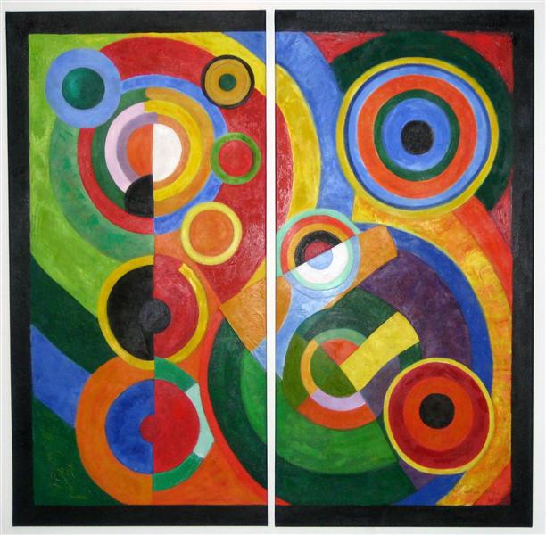الإيقاع - روبرت ديلوناي
Orphism أو Orphic Cubism ، وهو مصطلح صاغه الشاعر الفرنسي Guillaume Apollinaire في عام 1912 ، كان فرعًا
من التكعيبية التي تركز على
التجريد الخالص والألوان الزاهية المتأثرة بـ المدرسة الوحشية إضافة
للكتابات النظرية بول سينياك، تشارلز
هنري وأفكار الكيميائي الصباغي يوجين شيفرويل.
تعتبر هذه الحركة مفتاحًا في الانتقال
من التكعيبية إلى الفن التجريدي، كان رائدا من قبل
فرانتيشك كوبكاو روبرت ديلوناي و سونيا ديلوناي،
الذين أعادوا إطلاق استخدام
اللون خلال المرحلة
أحادية
الفترة اللون من
التكعيبية،
كان معنى
مصطلح Orphism بعيد المنال عندما ظهر لأول مرة ولا يزال غامضًا إلى حد ما
حيث نجد أصول الحركية متجذرة في المدرسة التكعيبية لكنها تتحرك نحو تجريد غنائي خالص، حيث رأى،
الرسم على أنه يجمع إحساسًا بألوان نقية، دون الإكتراث للتعبير عن الأحاسيس الداخلية أو إنشاء حتى دافع لها في اللوحة.
بدأت هذه
الحركة بموضوعات يمكن التعرف عليها ولكن سرعان ما تم استيعابها بواسطة هياكل مجردة بشكل متزايد. تهدف
Orphism إلى الاستغناء عن موضوع يمكن التعرف
عليه والاعتماد على الشكل واللون لتوصيل المعنى، هدفت الحركة أيضًا إلى التعبير عن مُثُل Simultanism:
وجود عدد لا حصر له من حالات العناصر المترابطة.
حركة البقعية (التاشييه)
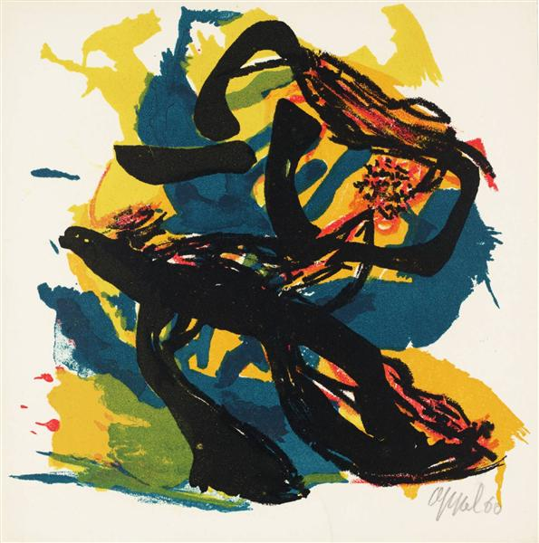بدون عنوان - كاريل أبيل
Tachisme (تهجئة بديلة: Tachism ، مشتقة من الكلمة الفرنسية tache ، stain)
هي نمط فرنسي تعبر عن اللوحة الشعبية في الأربعينيات والخمسينيات القرن الماضي، يُقال إن المصطلح قد
استخدم لأول مرة فيما يتعلق بالحركة في عام 1951، وغالبًا ما يُنظر إليه على أنه المكافئ الأوروبي
لـالتعبيرية المجردة على الرغم من وجود اختلافات في الأسلوب (التعبيرية التجريدية الأمريكية
تميل إلى أن تكون "أكثر صرامة" من البقعية).
كان جزءًا من حركة أكبر بعد الحرب تُعرف باسم
Art Informel (أو Informel)، والتي تخلت عن التجريد الهندسي لصالح
شكل أكثر بديهية للتعبير، على غرار الرسم الفني. اسم آخر لـ Tachism هو Abstraction lyrique
(المرتبط بالتجريد الغنائي الأمريكي) ترتبط جماعة الكوبرا أيضًا بـ Tachisme ، مثلها مثل مجموعة Gutai اليابانية.
بعد الحرب العالمية الثانية، غالبًا ما يشير مصطلح مدرسة باريس إلى Tachisme،
المعادل الأوروبي للتعبير التجريدي الأمريكي و كان المؤيدون
بشكل شديد لها: ونجان بول، ريوبيلو وولزو، جين دوبوفيهو، بيير سولاجو، نيكولاس دي ستالو، هانز
هارتونجو، جيرارد شنايدرو، سيرج بولياكوفو، جورج ماتيو، و جان ميساجير، من أهم المناصرين لهذه الحركة.
حركة كوبو المستقبلية

الترام - ألكسندر بوغومازوف
هي المدرسة الرئيسية للرسم والنحت التي مارسها المستقبليون الروس،
وعرض أعماله في موسكو، تبنى الرسامون المستقبليون الروس
أشكال التكعيبية والحركات التي انبثقت منها، مع تمثيل المستقبليين الإيطاليين للحركة.
كازيمير ماليفيتش طور الأسلوب ، والذي يمكن رؤيته في كتابه The Knife
Grinder (وقع عام 1912 ، ورسم عام 1913) ،على الرغم من أنه تخلى عنها لاحقًا من أجل التفوق.
كان من بين أتباع الحركة
نحاتيين كوبيين مستقبليين من بينهم جوزيف تشيكوف، وبوريس كوروليف و فيرا
موخينا ، وجميعهم درسوا في مدرسة الفنون السوفيتية الحكومية في موسكو.
حركة العمل الفييني

تعديل الأنف (مهزلة الوجه) - أرنولف راينر
كانت حركة فيينا حركة قصيرة وعنيفة في فن القرن العشرين، ويمكن اعتبارها جزءًا
من العديد من الجهود المستقلة في الستينيات لتطوير "فن الأداء"
(Fluxus ، حدث ، رسم الحركة ، فن الجسد ، وما إلى ذلك). المشاركون
الرئيسيون هم غانتر بروس، أوتو مولوهيرمان نيتش، ورودولف شوارزكوجلر - بصفتهم "فاعلين ضمن الميدان الفني"، كانوا نشيطين
بين عامي 1960 و 1971 - واصل معظمهم أعمالهم
الفنية بشكل مستقل من أوائل السبعينيات فصاعدًا.
يشير توثيق أعمال هؤلاء الفنانين الأربعة إلى أنه لم يكن هناك إحساس متطور بوعي لحركة ما أو أي تنمية لحالة العضوية
في مجموعة "فعلية" - بدلاً من ذلك، تم تطبيق هذا الاسم
على تكوينات تعاونية مختلفة بين هؤلاء الفنانين الأربعة، اقتبس مالكولم جرين تعليق
هيرمان نيتش ، "لم تكن حركة فيينا مجموعة أبدًا. كان رد فعل عدد من الفنانين على
مواقف معينة واجهوها جميعًا ، خلال فترة زمنية معينة ، وبوسائل ونتائج مماثلة."
>
حركة فن الأداء
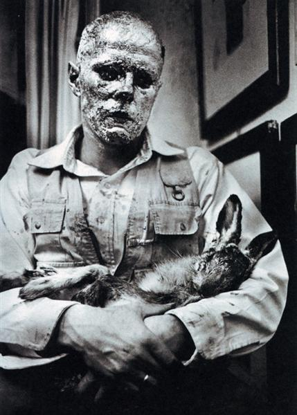الأرنب الميت - جوزيف بوسي
فن الأداء هو أداء يتم تقديمه للجمهور في سياق الفنون الجميلة، وهو تقليدي متعدد التخصصات.
قد يكون الأداء مكتوبًا أو غير مكتوب أو عشوائي أو منظم
بعناية، عفويًا أو تم التخطيط له بعناية مع أو بدون مشاركة الجمهور، يمكن أن يكون
الأداء مباشرًا أو عبر الوسائط، يمكن أن يكون المؤدي حاضرًا أو غائبًا، يمكن أن يكون
أي موقف يتضمن أربعة عناصر أساسية: الوقت ، والمكان ، وجسم المؤدي، أو التواجد في
وسيط والعلاقة بين المؤدي والجمهور، يمكن أن يحدث فن الأداء في أي مكان وفي أي مكان
أو مكان ولأي فترة زمنية - تشكل تصرفات فرد أو مجموعة في مكان معين وفي وقت معين العمل.
فن الأداء هو مفهوم متنازع عليه بشكل أساسي: أي تعريف منفرد له يعني ضمناً
الاعتراف بالاستخدامات المنافسة. كمفاهيم مثل "الديمقراطية" أو "الفن"، فإنها تعني الخلاف المثمر مع نفسها،
يرتبط معنى المصطلح بالمعنى الضيق
بتقاليد ما بعد الحداثة في الثقافة الغربية - من منتصف الستينيات إلى السبعينيات تقريبًا ،
غالبًا ما تكون مشتقة من مفاهيم الفن المرئي فيما يتعلق بأنطونين أرتود، الموقف ،
Fluxus ،فن التثبيت و الفن التصوري يميل نحو فن الأداء
إلى تعريفه على أنه نقيض للمسرح ، ويتحدى أشكال الفن الأرثوذكسي والأعراف الثقافية.
كان النموذج المثالي هو تجربة سريعة الزوال وأصيلة لفناني الأداء والجمهور في حدث
لا يمكن تكراره أو التقاطه أو شراؤه. يمكن للاختلاف الذي نوقش على نطاق واسع ، وكيفية
استخدام مفاهيم الفنون البصرية ومفاهيم فنون الأداء ، تحديد معاني عرض تقديمي فني.
فن الأداء هو مصطلح محجوز عادة للإشارة إلى الفن التصوري الذي
ينقل المعنى القائم على المحتوى بمعنى أكثر ارتباطًا بالدراما، بدلاً من كونه
أداءً بسيطًا من أجل أغراض الترفيه، يشير إلى حد كبير إلى الأداء المقدم إلى
الجمهور و لكنه لا يسعى إلى تقديم مسرحية تقليدية أو سرد خطي رسمي ، أو الذي
لا يسعى بالتناوب إلى تصوير مجموعة من الشخصيات الخيالية في تفاعلات رسمية
مكتوبة - لذلك يمكن أن يشمل الفعل أو الكلمة المنطوقة كتواصل بين الفنان
والجمهور، أو حتى تجاهل توقعات الجمهور بدلاً من اتباع نص مكتوب مسبقًا.
حركة الوهم المجرد
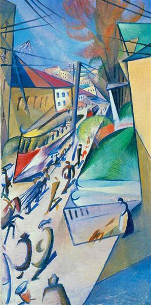أسود و أبيض - تشارلز هيرمان
الوهم التجريدي ، اسم صاغته مؤرخة الفن والناقد باربرا روز ، هو حركة فنية برزت في الولايات المتحدة خلال منتصف السبعينيات،
كانت الأعمال مشتقة بشكل عام من الحركة تعبيرية وأنماط التصوير التجريدية بفهوم تميز بالوصف المتين
مع عناصر منظور إضافية، و مصادر إضاءة صناعية و ظلال مصبوبة محاكية لتحقيق وهم
الفضاء ثلاثي الأبعاد على سطح ثنائي الأبعاد.
اختلف الوهم التجريدي عن الوهم التقليديTrompe-l'œil (تخدع العين)
الفن حيث يبدو أن المساحة التصويرية تظهر أمام سطح القماش أو بعيدًا عنه بدلاً من الانحسار في مستوى
الصورة كما هو الحال في الرسم التقليدي - ومع ذلك، كانت هذه اللوحات التجريدية في المقام الأول على عكس واقعية
Trompe L'oeil.
بحلول أوائل
الثمانينيات تم تخصيص العديد من الأجهزة المرئية التي نشأت في الوهم التجريدي في العالم
التجاري وخدمت مجموعة متنوعة من التطبيقات في التصميم الجرافيكي وتصميم النسيج والديكور
غير المحتمل للمركبات الترفيهية، أدى هذا الانتشار التجاري في الصور الخادعة المجردة في
النهاية إلى تفكك الحركة الفنية الأصلية، حيث تخلى عدد من الفنانين الأصليين عن العمل في هذا
الأسلوب، يشمل أسلاف وممارسو الأسلوب قبل عام 1970رونالد ديفيسو - ألان داركانجيلو - الهيلد.
من بين الفنانين المرتبطين بحركة الوهم التجريدي في السبعينيات ،
كما تم توثيقه من خلال معارض المتاحف والأدب الفني، جيمس هافارد - وجاك ليمبيك - وجو دويل ،
وتوني كينج - وجاك ريلي و جورج د.
كانت أولى معارض المتاحف الكبرى لمسح الوهم التجريدي هي "الوهم التجريدي" -
مركز بول ميلون للفنون ، والينجفورد ، كونيكتيكت ، 1977 ؛ "سبعة فنانين من نيويورك (الوهم التجريدي)" ،
معرض سيوول للفنون ، جامعة رايس ، هيوستن ، تكساس ، 1977 ؛ "كسر مستوى الصورة" ، معرض توماسولو ، يونيون كوليدج ،
كرانفورد ، نيوجيرسي ؛ و "واقع الوهم" ، برعاية دونالد بروير من جامعة جنوب كاليفورنيا ، والذي نشأ عام
1979 في متحف دنفر للفنون وسافر إلى متحف أوكلاند ، ومتحف هربرت ف. جونسون في جامعة كورنيل ،جامعة جنوب
كاليفورنيا ، ومتحف هونولولو للفنون. تم تنظيم وتجميع عدد من المعارض من قبل الموزع الرائد لهذا النوع ،
لويس ك. ميزل الذي قدم فنانين مهمين في معارض فردية وجماعية طوال السبعينيات في 141 شارع برينس في سوهو.
حركة النسوية

بدون عنوان - باربرا كروجر
انتقد الفن النسوي ، وهو فئة من الفن ارتبطت أولاً بالنسويات في أواخر الستينيات
والسبعينيات والنسوية بشكل عام، التوقعات الجنسانية التقليدية وقانون تاريخ الفن
باستخدام الفن لخلق حوار بين المشاهد والعمل الفني من خلال عدسة نسوية بدلاً من إنشاء
عمل فني للمتعة البصرية للمشاهد، يهدف الفن النسوي إلى جعل المشاهد يتساءل عن المعايير
الاجتماعية والسياسية للمجتمع على أمل أن يلهم التغيير نحو ما تدور حوله النسوية - إنهاء
التحيز الجنسي / الاضطهاد، تراوح استخدام وسائل الإعلام من الأشكال الفنية التقليدية -
مثل الرسم - إلى الأساليب غير التقليدية مثل فن الأداء و الفن التصوري، فن الجسم
والحرفية، والفيديو، والأفلام، وكذلك فن الألياف، خدم الفن النسوي كقوة
دافعة مبتكرة لتوسيع تعريف الفن من خلال دمج وسائل الإعلام الجديدة و خلق منظور فني جديد.
تاريخيًا ،
من المحتمل أن تكون هناك فنانة يمكن مقارنتها بـمايكل أنجلو أو ليوناردو دافنشيفي
المقام الأول لأن النساء تم استبعادهن من التدريب كفنانات - خاصة عندما يتعلق الأمر
بدراسة جسم الإنسان وبالتالي الاضطرار إلى رؤية عارضة أزياء عارية.
قرب نهاية الستينيات ،
ظهرت الحركة الفنية النسوية في وقت تم فيه انتقاد فكرة أن النساء في الأساس أدنى منزلة
من الرجال - خاصة في عالم الفن، في كتابها "لماذا لم تكن هناك فنانات عظماء" - كتبت ليندا نوشلن ،
"الخطأ لا يكمن في نجومنا أو هرموناتنا أو دورات الحيض لدينا أو مساحاتنا الداخلية الفارغة ،
ولكن في مؤسساتنا وتعليمنا"، و من خلال وسائل الإعلام المختلفة ، سلطت الفنانات الضوء على تاريخ
أبوي حيث أن غالبية الأعمال الفنية الأكثر شهرة صنعها رجال وصُنعت للرجال.
بعد الستينيات ،
بدأنا نشهد ولادة وسائل الإعلام الجديدة والانحدار التدريجي للتمييز بين الجنسين في الفن
بينما يبدأ تاريخ الفن النسوي تقليديًا في الستينيات، يعترف التاريخ أيضًا بجوانب الفن النسوي
التي بدأت في وقت أبكر بكثير من الستينيات والسبعينيات، الفن النسوي هو ببساطة النساء
التي تصنع الفن، على الرغم من أنه يُزعم أنه مصطلح يتوقف على وعي نظرية الفن النسوي.
حركة فن الألياف
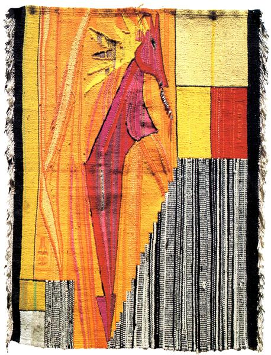موت الدونا - كارلس دي ليكوس
يشير فن الألياف إلى الفنون الجميلة التي تتكون مادتها من ألياف طبيعية أو
صناعية ومكونات أخرى ، مثل النسيج أو الغزل إنه يركز على المواد والعمل اليدوي من
جانب الفنان كجزء من أهمية الأعمال، ويعطي الأولوية للقيمة الجمالية على المنفعة.
دخل مصطلح فن الألياف حيز الاستخدام من قبل القيمين والمؤرخين الفنيين لوصف عمل الفنان الحرفي بعد
الحرب العالمية الثانية فشهدت تلك السنوات زيادة حادة في تصميم وإنتاج "النسيج الفني" خاصة في الخمسينيات
من القرن الماضي ، عندما أصبحت مساهمات الفنانين الحرفيين أكثر شهرة - ليس فقط في الألياف ولكن في
الطين والوسائط الأخرى - بدأ عدد متزايد من النساجين في ربط الألياف بأشكال غير وظيفية كأعمال فنية.
جلبت الستينيات والسبعينيات من القرن الماضي ثورة
دولية في فن الألياف إلى جانب النسيج، تم إنشاء هياكل الألياف من خلال الغزل ، والتواء ، والضفر
واللف ، والطي ، والتثبيت ، والتشابك، من خلالها استكشف الفنانون في الولايات المتحدة وأوروبا صفات
النسيج لتطوير أعمال يمكن تعليقها أو وضعها الحر "ثنائية أو ثلاثية الأبعاد ، مسطحة أو حجمية ،
العديد من الإبكارات ذات حجوم عالية أو مصغرة، غير موضوعية أو رمزية، تمثيلية أو خيالية.
كانت الحركة
النسائية في نفس الحقبة مهمة في المساهمة في ظهور فن الألياف بسبب الارتباط التقليدي للمرأة
بالمنسوجات في المجال المنزلي، في الواقع العديد فناني الألياف هم من النساء.
حركة فن البريد
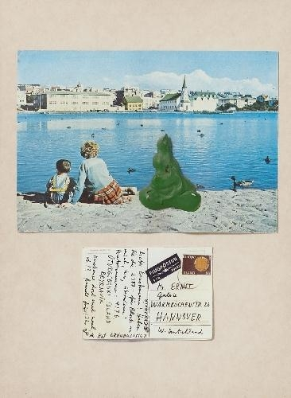بلا عنوان (جزيرة) - دينر روث
فن البريد (المعروف أيضًا باسم فن
البريد و فن المراسلات) هو حركة فنية شعبوية تركز على إرسال أعمال
صغيرة الحجم من خلال الخدمة البريدية، تطورت في البداية من حركة Fluxus
في الخمسينيات والستينيات من القرن الماضي ، على الرغم من أنها تطورت منذ ذلك الحين إلى حركة
عالمية مستمرة حتى الوقت الحاضر.
تشمل الوسائط المستخدمة بشكل شائع
في فن البريد البطاقات البريدية والورق ومجموعة من الصور والأشياء التي تم
العثور عليها أو المعاد تدويرها والطوابع المطاطية والطوابع التي أنشأها
الفنان (تسمى طابع الفنان) والطلاء، ولكن يمكن أن تتضمن أيضًا الموسيقى
أو فن الصوت أو الشعر أو أي شيء آخر يمكن وضعها في مظروف وإرسالها عبر
البريد، يعتبر فن البريد فنًا بمجرد إرساله يدعو فنانو البريد بانتظام
إلى فن بريد موضوعي أو موضعي لاستخدامه في معرض (غالبًا ما يكون غير موجه لفكرة محددة).
يقدر فنانو البريد الترابط مع الفنانين الآخرين، حيث نجد أن فن البريد يروج الشكل الفني لطريقة متساوية في الإبداع
تتحايل في كثير من الأحيان على أنظمة التوزيع الفني الرسمية
والموافقة عليها مثل سوق الفن والمتاحف والمعارض، يعتمد فنانو البريد
على شبكتهم "الخارجية" البديلة كطريقة أساسية لمشاركة أعمالهم
، بدلاً من الاعتماد على القدرة على تحديد مساحة المعرض وتأمينها.
حركة الفن الخارجي (بروت أرت)

بلا عنوان - لويس ويين
هو مصطلح فرنسي يُترجم إلى "الفن الخام" اخترعه الفنان
الفرنسي جين دوبوفيه لوصف فن مثل الكتابة على الجدران أو الفن الساذج، كطريقة
لتصنيف العمل الفني من قبل شخصيات منطوية ومعزولة وخيالية بشكل استثنائي
، خارج التقاليد الأكاديمية للفنون الجميلة.
يستخدم الفن الخارجي لوصف
الفن الذي يتمتع بجودة ساذجة وغالبًا ما ينتج من قبل أشخاص لم يتدربوا
كفنانين أو عملوا ضمن الهياكل التقليدية للإنتاج الفني، تم تقديم مصطلح Outsider Art في عام
1972 (بعد ثماني سنوات من الحركة الخارجية) من قبل الأكاديمي الإنجليزي ، روجر كاردينال ،
ومثل دوبوفيت ، كان ينوي تسليط الضوء على
الفن الذي يصنعه فنانون عادة غير مدربين
،من ال ويعيشون بهدوء، وربما يكونون محميين من النقد و القراءة الفنية لأعمالهم
بطريقة ما. . غالبًا ما يتم استخدام تعريفات الفن الخارجي و خارج الفن
بالتبادل لأن الشروط تحمل ذات الصلة، الفن الشعبي و الفن الساذج، لديها بعض الخصائص الأكثر تحديدًا،
يعتبر مصطلح الفن البدائي بشكل عام قديمًا ومقيدًا بأبعاد اجتماعية وإثنولوجية
إشكالية.
بالفن الخارجي تُعزى أول حالة ملحوظة من اهتمام الفنانين بالفن خارج
التقاليد الأكاديمية إلى دير بلو رايتر (ذا بلو رايدر)المجموعة التي كانت نشطة في
ألمانيا
من عام 1911 إلى عام 1914، والتي درست فن المرضى عقليًا.
يؤمن فنانو
Blue Rider بالتعبير عن القيم الروحية من خلال اللون والشكل في هذا المسعى ،
كانوا مهتمين بالصلات بين الموسيقى والرسم ، بالإضافة إلى مفهوم الحس
المواكب ، حيث يمكن لتحفيز حاسة واحدة أن يتسبب في رد فعل لا إرادي
في واحد أو أكثر من الحواس الأخرى. في عام 1912 ، نشرت المجموعة Der
Blaue Reiter Almanach ،والتي تضمنت مقالات نظرية
لـكاندينسكي، بالإضافة إلى أكثر من 140 نسخة
من الأعمال الفنية تم تصنيف معظمها على أنها
فنون "بدائية" وفنون شعبية، وفنون للأطفال
، وفن للمصابين بأمراض عقلية وبهذه الطريقة
،أظهروا اعتقادهم بأن القانون التاريخي للفن
الغربي التقليدي يعاني من نقص معين يمكن تداركه
من خلال اللجوء إلى مصادر خارج نطاق اختصاصه.
الحركة الملموسة (الفن الخرساني)

الفن الخرساني هو حركة فنية ذات تركيز
قوي على التجريد. الفنانثيو فان دوسبرغ، ترتبط ارتباطًا وثيقًا بـ دي ستيل
الحركة الفنية ، صاغ مصطلح "الفن الملموس" حيث أسس في عام 1930 مجموعة
Art Concret ووضح معالمها في بيان بعنوان "أساس الفن الخرساني"
، وقعه أربعة فنانين آخرين من المجموعة ، بما في ذلك أوتو جي
كارلسوندوجان هيليون وليون توتونجيان. أوضح البيان أن الفن الناتج
يجب أن يكون غير مرجعي بقدر ما يجب ألا تشير مكوناته إلى الكيانات
التي يتم مواجهتها عادةً في العالم الطبيعي المرئي أو تلمح إليها.
هذا تمييز منالتجريدعموما. بمعنى أكثر عمومية ، يمكن أن يشمل
"الفن التجريدي" ، وفي كثير من الأحيان ، "تجريد الأشكال في الطبيعة".
ولكن كان المقصود من "الفن الملموس" أن ينبثق "مباشرة من العقل"
وبالتالي أن يكون "دماغياً" أكثر من الفن التجريدي بشكل عام. غالبًا ما يتكون
الفن الخرساني من ميزات مرئية أساسية مثل المستويات والألوان والأشكال.
تميل "المشاعر" إلى الغياب عن الفن الملموس. قد يكون من الصعب اكتشاف
"يد" الفنان في الأعمال النهائية للفن الملموس ؛ قد يبدو الفن الملموس ،
في بعض الحالات ، أنه تم صنعه بواسطة آلة. غالبًا ما يكون للفن الخرساني
مرجع مرئي أساسي للهندسة بينما قد يجد الفن التجريدي العام أساسه
في مكونات العالم الطبيعي.قد تتضمن صياغة وصف للفن الملموس اعتمادًا
كبيرًا على الصفات الشكلية للعمل الفني. نص بيان ثيو فان دوسبرغ على
أن الفن "لا ينبغي أن يتلقى شيئًا من الخصائص الشكلية للطبيعة أو من
الشهوانية أو العاطفية. نريد استبعاد الغنائية والدرامية والرمزية
، إلخ ...". في الفن الملموس ، يمكن أن تكون المعادلة الرياضية
بمثابة نقطة انطلاق. يمكن أن يشمل الفن الخرساني الرسم والنحت.
تم تعميم المصطلح من قبل
الفنان جوزيف ألبرزوالفنان ماكس بيلروجت كذلك للأفكار المرتبطة بالفن الخرساني ،
ونظمت المعرض الدولي الأول في عام 1944. أتت الحركة تؤتي ثمارها في شمال إيطاليا
وفرنسا في الأربعينيات والخمسينيات من القرن الماضي من خلال عمل مجموعات
Movimento d'arte concreta (MAC) و Espace. في عام 1960 ، نظم ماكس بيل معرضًا كبيرًا لفن الخرسانة
في زيورخ لتوضيح 50 عامًا من تطوره.
حركة التعبيرية الجديدة (المحدثة)

صيد الأسماك - جان ميشيل باسكيات
التعبيرية الجديدة هي أسلوب متأخر-الحداثيأو الرسم والنحت في وقت مبكر ما بعد الحداثة
التي ظهرت في أواخر السبعينيات. كان يُطلق على التعبيريين الجدد أحيانًا اسم
Neue Wilden (`` البرية الجديدة '' ؛ `` New Fauves '' من
الأفضل أن تلبي معنى المصطلح). يتميز بالذاتية الشديدة والتعامل القاسي مع المواد.
تم تطوير التعبيرية الجديدة كرد فعل ضدالفن التصوريوالحد الأدنى من الفن في السبعينيات.
عاد التعبيريون الجدد إلى تصوير أشياء يمكن التعرف عليها ، مثل الجسم البشري ،
(على الرغم من أنه في بعض الأحيان فينبذة مختصرةبطريقة قاسية وعاطفية عنيفة ،
غالبًا باستخدام ألوان زاهية. كان مستوحى بشكل علني من الرسامين التعبيريين
الألمان ، مثلاميل نولدو ماكس بيكمانو جورج جروسو إرنست لودفيج كيرشنرو
جيمس إنسور و إدوارد مونش. كما أنه مرتبط بلوحة التجريد الغنائي الأمريكي
في الستينيات والسبعينيات
،ذا مشعر الحركة في شيكاغو ، مدرسة
Bay Area التصويرية في الخمسينيات والستينيات من القرن الماضي
، واستمرارًا
لـ التعبيرية
المجردة، لوحة
الصور الجديدة والسوابق
في
لوحة
البوب.
سيطرت التعبيرية الجديدة على سوق الفن حتى منتصف الثمانينيات. ظهر الأسلوب على
المستوى الدولي واعتبره العديد من النقاد ، مثل أخيل بونيتو أوليفا ودونالد كوسبيت ، بمثابة
إحياء للموضوعات التقليدية للتعبير عن الذات في الفن الأوروبي بعد عقود من
الهيمنة الأمريكية. كانت القيمة الاجتماعية والاقتصادية للحركة محل نقاش ساخن.
انتقد النقاد مثل بنجامين بوشلوه ، وهال فوستر ، وكريغ أوينز ، وميرا شور
بشدة علاقتها بإمكانية تسويق الرسم في سوق الفن سريع النمو ، والمشاهير ، ورد
الفعل العنيف ضد النسوية ، ومعاداة الفكر ، والعودة إلى الموضوعات الأسطورية
والأساليب الفردية التي اعتبروها عفا عليها الزمن. تم تهميش النساء بشكل
ملحوظ في الحركة ، وتم حذف رسامين مثل إليزابيث موراي وماريا لاسنيج من
العديد من معارضها الرئيسية ، وأشهرها معرض "روح جديدة في الرسم" عام
1981 في لندن والذي ضم 38 رسامًا من الذكور ولكن لم تكن هناك رسامات.
حركة الدادائة الجديدة (المحدثة)
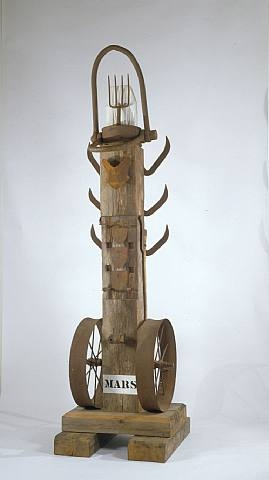المريخ - روبرت إنديانا
كانت Neo-Dada حركة ذات مظاهر سمعية وبصرية
وأدبية لها أوجه تشابه في الأسلوب أو النية مع الأقدم. داداعمل فني.
في الولايات المتحدة ، اشتهر هذا المصطلح من قبل باربرا روز في
الستينيات ، ويشير في المقام الأول ، وإن لم يكن حصريًا ، إلى العمل
الذي تم إنشاؤه في ذلك العقد وفي العقد السابق. كان هناك أيضًا بُعد
دولي للحركة ، لا سيما في اليابان وأوروبا ، حيث كان بمثابة أساس Fluxus و
Pop Art و Nouveau réalisme.
كانت Neo-Dada حركة ذات مظاهر سمعية وبصرية وأدبية لها أوجه تشابه في الأسلوب
أو النية مع الأقدم. داداعمل فني. في الولايات المتحدة ، اشتهر
هذا المصطلح من قبل باربرا روز في الستينيات ، ويشير في المقام
الأول ، وإن لم يكن حصريًا ، إلى العمل الذي تم إنشاؤه في ذلك
العقد وفي العقد السابق. كان هناك أيضًا بُعد دولي للحركة
، لا سيما في اليابان وأوروبا ، حيث كان بمثابة أساس Fluxus و Pop Art و Nouveau réalisme.
تبع الاهتمام بالدادائية في
أعقاب المنشورات الوثائقية ، مثلروبرت مذرويلمنشورات دادا الرسامين والشعراء
(1951) والمنشورات باللغة الألمانية من عام 1957 وما بعده ، والتي ساهم فيها
بعض الدادائيين السابقين. ومع ذلك ، شجب العديد من الدادائيين الأصليين تسمية
Neo-Dada ، لا سيما في تجلياتها الأمريكية ، على أساس أن العمل كان مشتقًا وليس اكتشافات جديدة
؛ تم العثور على المتعة الجمالية في ما كان
في الأصل احتجاجات ضد المفاهيم الجمالية البرجوازية ؛ ولأنها قوّضت التجارة.
انتقل العديد من الفنانين الذين تماثلوا مع هذا الاتجاه لاحقًا إلى تخصصات أخرى
أو تعرفوا على حركات فنية مختلفة ، وفي كثير من الحالات ، يمكن التعرف على
جوانب
معينة فقط من أعمالهم المبكرة. على سبيل المثال،بييرو مانزوني'Consacrazione dell'arte
dell'uovo sodo (التكريس الفني للبيضة المسلوقة
، 1959) ، الذي وقع عليه بصمة إبهامه ، أو علبه القذرة (1961) التي كان سعرها
مرتبطًا بقيمة الوزن بالذهب
، مما يسخر من مفهوم الإبداع
الشخصي للفنان والفن كسلعة.
حركة التصوير الجديد

بوابات الجحيم - فرناندو بوتيرو
يصف الفن التصويري الجديد إحياء تعبيري في شكل حديث للفن التصويري. ظهر المصطلح الجديد
والمجازي في الستينيات في المكسيك وإسبانيا ليمثل شكلاً جديدًا من أشكال الفن التشكيلي.
حركة الفن الحركي

الكون - ألكساندر كالدر
الفن الحركي هو فن من أي وسيط يحتوي على حركة يمكن أن يدركها المشاهد
أو يعتمد على الحركة لتأثيرها. اللوحات القماشية التي توسع منظور المشاهد للعمل
الفني وتتضمن حركة متعددة الأبعاد هي أقدم الأمثلة على الفن الحركي. بشكل أكثر
ملاءمة ، الفن الحركي هو مصطلح يشير اليوم غالبًا إلى المنحوتات ثلاثية الأبعاد
والأشكال مثل الهواتف المحمولة التي تتحرك بشكل طبيعي أو يتم تشغيلها آليًا.
يتم تشغيل الأجزاء المتحركة بشكل عام بواسطة الرياح أو المحرك أو المراقب.
يشمل الفن الحركي مجموعة متنوعة من التقنيات والأساليب المتداخلة.
هناك أيضًا جزء من الفن الحركي يتضمن حركة افتراضية ، أو
بالأحرى حركة يتم إدراكها من زوايا أو أقسام معينة فقط من العمل. يتعارض هذا المصطلح
أيضًا بشكل متكرر مع مصطلح "الحركة الظاهرية" ، والذي يستخدمه كثير من الناس عند
الإشارة إلى عمل فني يتم إنشاء حركته بواسطة المحركات أو الآلات أو الأنظمة التي تعمل
بالطاقة الكهربائية. كل من الحركة الظاهرية والافتراضية هي أنماط من الفن الحركي لم
يتم الجدل بشأنها إلا مؤخرًا على أنها أنماط من فن المرجع. إن مقدار التداخل بين
الفن الحركي والفن التشغيلي ليس مهمًا بما يكفي للفنانين ومؤرخي الفن للنظر في
دمج الأسلوبين تحت مصطلح جامع واحد ، ولكن هناك اختلافات لم يتم إجراؤها بعد.
تطور "الفن الحركي" باعتباره لقبًا من عدة مصادر.تعود أصول الفن الحركي
إلى أواخر القرن التاسع عشر مثل الفنانين الانطباعيينكلود مونيهو إدغار ديغا،
و إدوارد مانيهالذي جرب في الأصل إبراز حركة الشخصيات البشرية على القماش.
هذا الثلاثيانطباعيسعى الرسامون جميعًا إلى ابتكار فن أكثر واقعية من معاصريهم.
صور راقص ديغا وفرس السباق هي أمثلة على ما يعتقد أنه "الواقعية الفوتوغرافية"
. شعر فنانين مثل ديغا في أواخر القرن التاسع عشر بالحاجة إلى تحدي
الحركة نحو التصوير الفوتوغرافي بمناظر طبيعية وصور شخصية نابضة بالحياة.
بحلول أوائل القرن العشرين ، أصبح بعض الفنانين أقرب وأقرب إلى إسناد فنهم إلى
الحركة الديناميكية. نعوم جابو ، أحد الفنانين المنسوبين إلى تسمية هذا الأسلوب
، كتب
مرارًا وتكرارًا عن عمله كأمثلة على "الإيقاع الحركي". شعر أن منحوته المتحرك
Kinetic Construction (يُطلق عليه أيضًا اسم
الموجة
الدائمة ، 1919-1920) كان الأول من نوعه في القرن العشرين. من العشرينات حتى الستينيات ، أعيد
تشكيل أسلوب الفن الحركي من قبل عدد من الفنانين الآخرين الذين جربوا الهواتف المحمولة وأشكال
النحت
الجديدة.
الحركة المكانية (الفراغية)
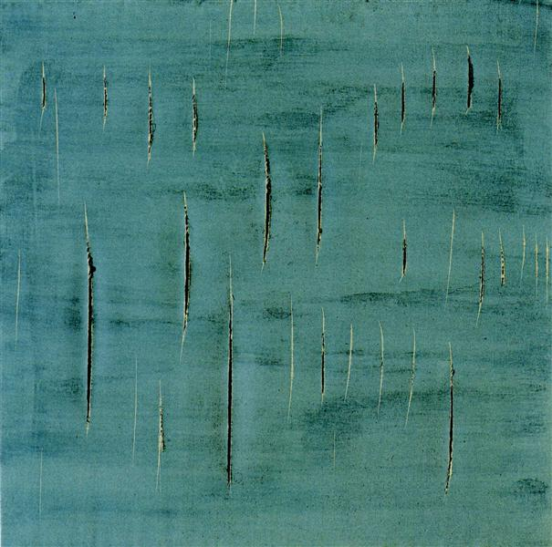مفهوم الفراغ - لوسيو فونتانا
Spatialism (الإيطالية: Spazialismo) هي حركة فنية أسسها فنان إيطالي
لوسيو فونتانافي ميلانو عام 1947 حيث كان ينوي بشكل كبير توليف
اللون والصوت والفضاء والحركة والوقت في نوع جديد من الفن. كانت
الأفكار الرئيسية للحركة متوقعة في بيانه بيانكو (البيان الأبيض) الذي
نُشر في بوينس آيرس عام 1946. وتحدث فيه عن فن "مكاني" جديد يتماشى
مع روح عصر ما بعد الحرب. لقد نبذت المساحة الوهمية أو "الافتراضية"
للرسم التقليدي للحامل ، وسعت إلى توحيد الفن والعلم
لإبراز اللون والشكل في مساحة حقيقية من خلال استخدام
تقنيات حديثة مثل إضاءة النيون والتلفزيون. تم اتباع
خمسة بيانات أخرى ؛ كانوا أكثر تحديدًا في سلبياتهم
من جوانبهم الإيجابية ، وحملوا مفهوم المكانية أبعد
قليلاً من البيان الذي يتألف جوهره "عواطف بلاستيكية وعواطف
ملونة متوقعة على الفضاء ". في عام 1947 ، أنشأت فونتانا"
بيئة مكانية سوداء "، وهي غرفة مطلية باللون الأسود
، والتي كانت
تعتبر أنذرت بفن البيئة. لوحاته
المطعونة والمقطوعة (بدءًا من عام 1949 و 1959 على التوالي)
يعتبر أيضًا أنه يجسد المذهب
المكاني.مثال على النوع المقطوع
(القطع المصنوع بشفرة حلاقة) هو Spatial Concept Waiting (1960 ،
تيت ، لندن). على الرغم من أن أفكار فونتانا كانت غامضة
، إلا أن نظرته كانت مؤثرة ، لأنه كان واحدًا من أولاً ، بالتأكيد أول فنان
أوروبي يروج حقًا لفكرة الفن كإيماءة أو أداء ، بدلاً من إبداع عمل مادي دائم
.تعتبر لوحاته المطعونة والمقطوعة (ابتداءً من عام 1949 و 1959 على التوالي)
بمثابة تجسيد للمكانية. مثال على النوع المقطوع (القطع المصنوع بشفرة حلاقة)
هو Spatial Concept Waiting (1960 ، تيت ، لندن).
على الرغم من أن أفكار فونتانا كانت غامضة ، إلا أن نظرته كانت مؤثرة
، لأنه كان من أوائل الفنانين الأوروبيين ،
وبالتأكيد أول من روج حقًا لفكرة الفن كإيماءة
أو أداء ، بدلاً من خلق عمل جسدي دائم.تعتبر
لوحاته المطعونة والمقطوعة (ابتداءً من عام
1949 و 1959 على التوالي) بمثابة تجسيد
للمكانية. مثال على النوع المقطوع
(القطع المصنوع بشفرة حلاقة) هو
Spatial Concept Waiting (1960 ، تيت ، لندن)
. على الرغم من أن أفكار فونتانا كانت
غامضة ، إلا أن نظرته كانت مؤثرة ، لأنه كان من أوائل الفنانين الأوروبيين ، وبالتأكيد أول من روج
حقًا لفكرة الفن كإيماءة أو أداء ، بدلاً من خلق عمل جسدي دائم.بالتأكيد أول فنان أوروبي يروج حقًا
لفكرة الفن كإيماءة أو أداء ، بدلاً من إبداع عمل مادي دائم.بالتأكيد أول فنان أوروبي يروج حقًا لفكرة
الفن كإيماءة
أو أداء
، بدلاً من إبداع عمل مادي
دائم.
حركة الكلاسيكية الواقعية
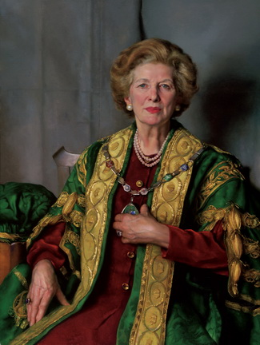السيدة تاتشر - نيلسون شانكس
تشير الواقعية الكلاسيكية إلى حركة فنية في أواخر القرن
العشرين وأوائل القرن الحادي والعشرين حيث يضع
الرسم والرسم قيمة عالية على المهارة والجمال ،
وتجمع بين عناصر من القرن التاسع عشر الكلاسيكية الجديدة و الواقعية.
ظهر مصطلح "الواقعية الكلاسيكية" لأول مرة على أنه وصف للأسلوب الأدبي ، كما هو الحال في نقد عام
1882 لشعر ميلتون. يعود استخدامه المتعلق بالفنون المرئية إلى عام 1905 على الأقل في إشارة
إلىماساتشيولوحات. نشأ عنوانًا لحركة فنية معاصرة ولكن تقليدية مع ريتشارد لاك (1928-2009)
، الذي كان تلميذًا للفنان بوسطن آر إتش آيفز جاميل (1893-1981) خلال أوائل الخمسينيات
من القرن الماضي. درس إيفز جاميل مع ويليام ماكجريجور باكستون (1869-1941) وكان باكستون
قد درس مع فنان فرنسي من القرن التاسع عشر ،جان ليون جيروم(1824–1904). في عام 1967 ، أسس لاك
Atelier Lack ، وهي مدرسة استوديو للفنون الجميلة على غرار مشاغل باريس في القرن التاسع عشر وتعليم الانطباعيين في بوسطن.
بحلول عام 1980 كان قد درب مجموعة كبيرة من الرسامين الشباب. في عام 1982 ،
نظموا معرضًا متنقلًا لأعمالهم وعمل فنانين آخرين ضمن التقاليد الفنية التي يمثلها Gammell
و Lack وطلابهم. طلب فيرن سوانسون ، مدير متحف سبرينغفيل للفنون ، سبرينغفيل ، يوتا
(مكان إنشاء المعرض) من لاك ، أن يصوغ مصطلحًا يميز واقعية ورثة تقليد بوسطن عن واقعية الفنانين التمثيليين الآخرين. على
الرغم من أنه كان مترددًا في تسمية هذا العمل ، اختار لاك تعبير "الواقعية الكلاسيكية".
تم استخدامه لأول مرة في عنوان ذلك المعرض: الواقعية الكلاسيكية:القرن العشرين الآخر.
كان مصطلح "الواقعية الكلاسيكية" يهدف في الأصل إلى وصف العمل الذي يجمع
بين الرسم والتصميم الجيد للتقليد الأكاديمي الأوروبي كما جسده جيروم
مع قيم الألوان المرصودة لتقاليد بوسطن الأمريكية كما تجسدها باكستون.